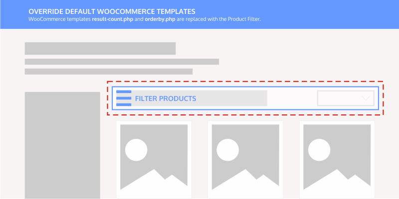
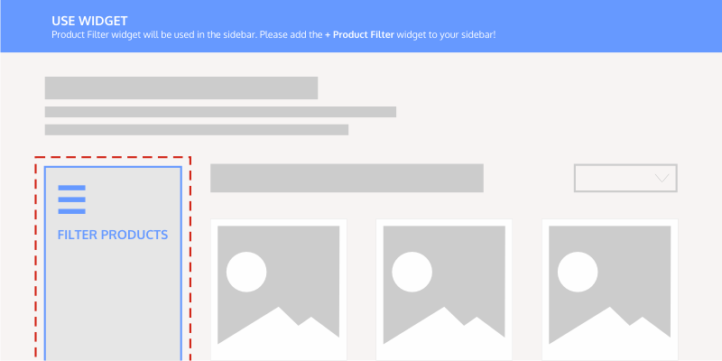
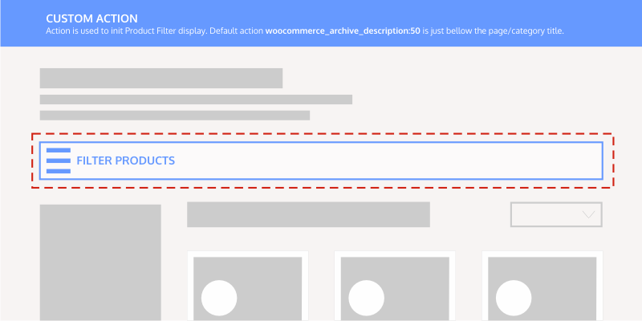
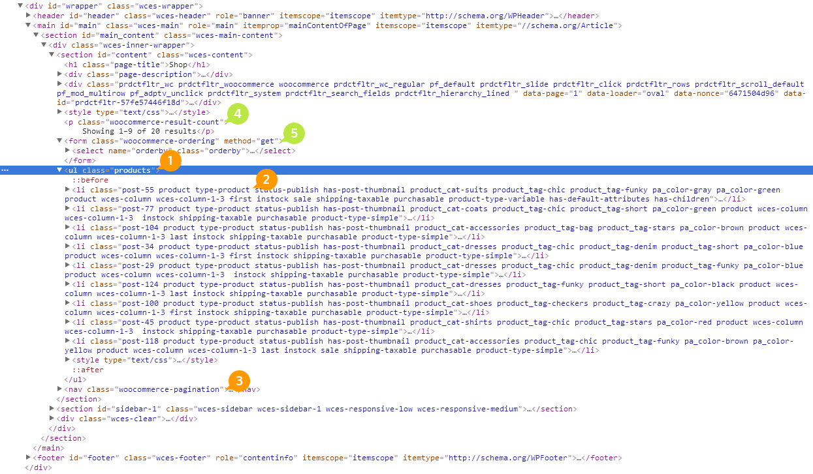
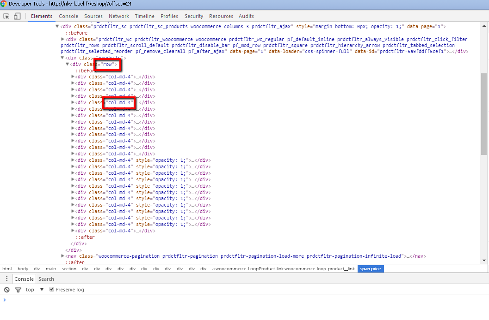
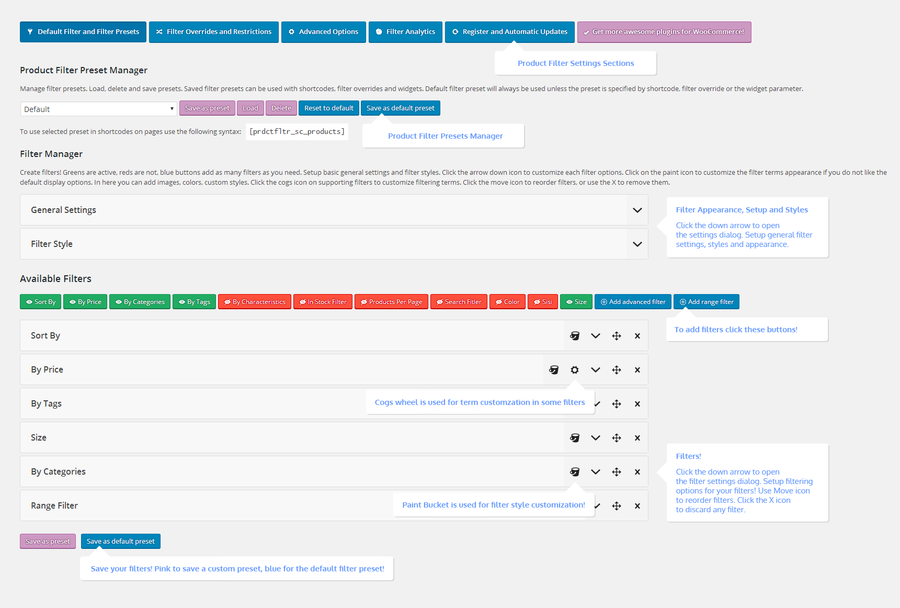

Product Filter for WooCommerce
Please read the full documentation and watch full video guide to use the plugin properly! Thank you!
Help us out, let's boost the plugin experience! - Thanks!
Very Important - Support Changes
Important notice! - WooCommerce Product Filter 6.4.0, 6.3.0 and WPML!
Change Log - Product Filter for WooCommerce 6.5.8 - 24. May 2018.
+ fixed categories and subcategories displays and active filters bugs and issues + fixed variable images switch issues with media device support + fixed meta filter multi selection and collectors problems + fixed sidebar with overlay and rtl support + fixed remove uncategorized from category terms, if you want it back use the filter prdctfltr_exclude_categories
1.1 Introduction and Full Video Guide
For the best experience with the WooCommere Product Filter plugin please read the documentation and watch the full video guide.
Product Filter for WooCommerce is the plugin that extends your WooCommerce Shop by adding filtering methods for your products. The filter plugin is very veristile and can be installed in numerous ways. The most common setups are Product Filter in Sidebar, as filtering widgets and the Product Filter on Top, as the filter bar on top of the products list. Both methods support AJAX (Asynchronous JavaScript and XML) calls, this means that filtering can be done without refreshing the page, but rather on page while refreshing only the products list. AJAX use with the Product Filter is optional. For a good kick start watch the full video and then continue to your installation. If you use a theme that is listed in the Specific Theme Installations, then just follow the installation instructions. If your theme is not listed check the Shop/Product Archives Integration and Installations section to install the filter properly.
After installation, please navigate to WooCommerce > Settings > Product Filter > Register and Automatic Updates and enter your Codecanyon.net purchase code to get automatic updates and more! Thanks for your purchase!
1.2 Plugin Installation
This section covers the first steps when using Product Filter for WooCommerce. Please read it thoroughly now to avoid problems later.
To install WooCommerce Product plugin you must have a working version of WordPress and WooCommerce plugin already installed. For information on installing the WordPress platform, please see the WordPress Codex - Installing WordPress. For information on installing the WooCommerce Shop system please visit the following link WooThemes - Installing WooCommerce.
Next step is the Product Filter installation. In the full .ZIP archive you have downloaded from Codecanyon.net you will find a file called woocommerce-product-filter.zip This file is the installable .ZIP archive you can install via WordPress. To install it properly please follow these installation guidelines:
Installing from WordPress
Follow the steps bellow to install from WordPress Dashboard
-
Navigate to
Plugins -
Click Install
Pluginsand clickAdd New -
Click the
Upload Pluginbutton -
Navigate
woocommerce-product-filter.zipon your computer and clickInstall Now -
When installation is done please click
Activateto activate your newly installed Product Filter for WooCommerce plugin
Product Filter for WooCommerce is now running! Please read further to setup your filters!
Installing using FTP
Follow the steps bellow to install using FTP
-
Unzip
woocommerce-products-filter.zipto a desired location on your HDD. These extracted files will be uploaded later via FTP - Connect to your server via FTP (Use FileZilla or any other FTP client)
-
Navigate to
/wp-content/plugins/server directory -
Locate the local directory where you have unzipped the
woocommerce-product-filter.ziparchive -
Upload local folder
/prdctfltr/to remote/wp-content/plugins/ -
To activate the newly installed plugin navigate to
Pluginsand click theActivatebutton within the Product Filter for WooCommerce plugin row
Product Filter for WooCommerce is now running! Please read further to setup your filters!
1.3 Register, Automatic Updates and Manual Updating
To get automatic updates and more directly from WordPress register your Product Filter!
Best way to keep your Product Filter up to date is to use the Automatic Updates option. Navigate to WooCommerce > Settings > Product Filter > Register and Automatic Updates and enter your Codecanyon.net purchase code to get automatic updates. When an update is available, WordPress will notify you about the new release and ask you to update. For a manual update check navigate to Plugins > Product Filter for WooCommerce and click the Check For Updates button.
Updates are released regularly and please make sure you use the latest version, but also don't rush with the updates if your installation is working fine. We're currently working hard on improving the filter and the bugs are possible. Thanks for your understanding!
To automatically update all your need to do now is click the Update button. Once updated you will be noted about the changes. Now you can see the new version number has appeared in Plugins > Product Filter for WooCommerce.
If you want to update the plugin manually you can just deactivate the plugin, delete it and install the brand new version you have downloaded from Codecanyon.net. Your settings, presets and options will stay intact, so do not worry about that. You can also update via FTP, by overwriting the plugin files.
Updating from WordPress
Follow the steps bellow to update from WordPress Dashboard
-
Navigate to
Plugins -
Find the currently used Product Filter for WooCommerce plugin and click
Deactivate -
After deactivation click
Deleteto remove the old version (do not worry about the settings, they will stay intact) -
Click Install
Pluginsand clickAdd New -
Click the
Upload Pluginbutton -
Navigate the new version archive
woocommerce-product-filter.zipon your computer and clickInstall Now -
When installation is done please click
Activateto activate your newly installed Product Filter for WooCommerce plugin
Product Filter for WooCommerce will be updated with the version you have uploaded and settings will not be lost!
Updating using FTP
Follow the steps bellow to update using FTP
-
Unzip the new version archive
woocommerce-products-filter.zipto a desired location on your HDD. These extracted files will be uploaded later via FTP - Connect to your server via FTP (Use FileZilla or any other FTP client)
-
Navigate to
/wp-content/plugins/server directory and delete the current plugin folder/prdctfltr/ -
Locate the local directory where you have unzipped the new version archive
woocommerce-product-filter.zip -
Upload local folder
/prdctfltr/to remote/wp-content/plugins/
Product Filter for WooCommerce will be updated with the version you have uploaded and settings will not be lost!
1.4 Product Filter Shop/Archive Integration
The most common way to use the Product Filter is in your Shop and Product Archive pages!
Most common way to use the filter is in your Shop/Product Archives. Upon installation Product Filter tries to install itself in the default manner by replacing your WooCommerce orderby.php and result-count.php templates. If you are using a quality theme, which means that it is not too good or too bad, this default installation will work just fine. So, by default installation, your order by select box and the product result count on your Shop/Product Archives will be replaced with the Product Filter. If you have a theme that customizes these in a way, then the filters might be out of place, but do not panic, because this is just automatic install and Product Filter has a lot more installing features that will surely fit your site. The author of the Product Filter for WooCommerce advises users to use either the Custom Action or the Widget mode, because they are more configurable.
For settings on installing the Product Filter in your Shop and Product Archives please navigate to WooCommerce > Settings > Product Filter > Installation and Advanced Options.
1.4.1 Override Default WooCommerce Templates - Shop/Archive Installation
When overriding it is important to have a good theme that supports it!

This method is used only for default themes such as TwentyTwelwe, TwentyThirteen, or similar, Woo Themes Directory Themes or some other themes that will support these features by default. This is also the default installation for the Product Filter. When using this mode your Product Filter Shop/Product Archive Installation will be set to Override Default WooCommerce Templates. Once this is set you will need to choose which elements to override. Select which templates to override in the Select Filtering Templates setting. Both or only one of them. A successfully set installation like this, with a theme that supports it, will show the Product Filter on your Shop and Archive Pages instead of the original orderby.php and result-count.php loop templates and the option for Select Filtering Templates would include both settings.
However, this is not the best way to install the filter in your shop, but it is a quick and automatic one, if supported. So, if you are fine with it then head to Default Filter and Filter Presets settings which can be found in WooCommerce > Settings > Product Filter to setup your filters! For further read on how to setup the filter please visit the Settings section.
1.4.2 Widget Mode - Shop/Archive Installation
Widgets are elements in sidebar! Filters can be widgets too!

When using filters in website sidebars as widgets your setting for Product Filter Shop/Product Archive Installation will be set to Use Widget. This option is set in the Installation and Installation and Advanced Options WooCommerce > Settings > Product Filter > Installation and Advanced Options.
Save the settings and navigate to Appearance > Widgets. Add the + Product Filter widget to your sidebar and the widget settings will appear. The important thing is that you should setup your Product Filter widget in the Default Filter and Filter Presets settings which can be found in WooCommerce > Settings > Product Filter. The widget version only adds these filters to your sidebars, but all cofiguration is done in the WooCommerce > Settings > Product Filter > Default Filter and Filter Presets settings page. For further read on widgets visit the Widget section and for further read on how to setup the filter please visit the Settings section.
1.4.3 Custom Action - Shop/Archive Installation
The best possible way, of course if you do not want widgets ;)

The most customizable mode will be the Custom Action. For this mode your Product Filter Shop/Product Archive Installation will be set to Custom Action. Once set, action is used to initialize the filter output at desired place. This action is set in the Product Filter Init Action setting. The most common basic action that can be used is the woocommerce_before_shop_loop action. This is a default action that should be in every WordPress template that supports WooCommerce. This action is triggered at the top of the products list on your Shop or Product Archive pages. This action also triggers your default orderby.php and result-count.php templates. Actions have priorities. By default priorities for orderby.php is 20 and result-count.php is 30. We can also setup priority for the Product Filter. So if we set the action to woocommerce_before_shop_loop:40 the filter will be shown just bellow these two templates. By default filter priority is 10 and if no priority is defined within the action (without the :40) the filter will be shown on top of these templates. A good action to hook onto, for themes that support it, in order not to lose the filter when no products are found is the woocommerce_archive_description:50.
Sometimes the templates have their own custom actions and do not use WooCommerce default actions. This means that your woocommerce_before_shop_loop will not show the filter on Shop or Product Archives. If this is the case you can still check your theme folder for a directory named /woocommerce/. Here you will find the archive-product.php. You can edit this file to find the appropriate action to initialize your filter output. Basically you will look for a do_action( 'action-name' ); code and copy the action name to the Product Filter Init Action setting.
1.4.4 AJAX Shop/Archive Installation
How to properly install AJAX?
If you have followed previous steps to install filter at appropriate place in your Shop/Product Archives you can try installing the AJAX functions as well. Some theme specific installations can be found in the Specific Themes Installations section. If your theme is not listed follow this guide to install it properly.
If the default AJAX settings are not working, your template has made some adjustments to the original WooCommerce structure and need configuration to work properly. To setup AJAX you will need to adjust your theme jQuery selectors that get the product wrapper, products and pagination. The default structure looks similar as the following.
In this default structure, we have a 1. ul.products which is our product wrapper. The corresponding AJAX Wrapper jQuery Selector, which if left blank will use the default value and look like this $('ul.products') will be used when searching for the products wrapper in page. If your theme does not have the ul.products element that wraps your Shop products, you will need to adjust your wrapper jQuery selector to suit your theme. All selectors are set in the same way. If the original, default value is changed by your theme, then its AJAX jQuery Selector setting needs a proper value, so AJAX can function as expected. In the Specific Themes Installations we have covered some popular themes and their installation options. Lets check more elements that need adjustment if the theme is altering them. Number 2. li.type-product element which is our AJAX Product jQuery Selector. The 3. nav.woocommerce-pagination element is our AJAX Pagination jQuery Selector. These three are needed to setup AJAX correctly. Some themes change these classes and structures as you can see in the Specific Themes Installations Section. Further you can setup the 4. .woocommerce-results-count, or Result Count jQuery Selector, and 5. .woocommerce-ordering, or Result Count jQuery Selector if you use these in your Shop/Product Archives. Some themes also use different pagination functions and not the default WooCommerce pagination.php template. These can also be supported, as Kallyas theme is by naming the custom pagination function that is used in the Custom Pagination Function setting. For Kallays theme the pagination function that is called is named zn_woocommerce_pagination.
1.4.5 Manual Installation Options - Shop/Archive Installation
Editing files and inserting filters manually.
Templates that do not have any actions in the archive-product.php can be customized to show the Product Filter with its own action. For this purpose you will edit your code (in most cases the archive-product.php) and insert the PHP code with the Product Filter action. The code will look like this.
<?php do_action( 'prdctfltr_output' ); ?>This will show the filter, but the filter will be default one. If you want to setup settings for this filter such as presets, classes or similar then you will use the following method.
<?php echo do_shortcode( '[prdctfltr_sc_get_filter preset="my-cool-preset"]' ); ?>Basically this will execute the shorcode for showing only the filter. For more on this shortcode you can read in the [prdctfltr_sc_get_filter] - Show Filters section.
Upon successful Custom Action installation head to Default Filter and Filter Presets settings which can be found in WooCommerce > Settings > Product Filter to setup your filters! For further read on how to setup the filter please visit the Settings section.
1.4.6 Highly Customizable Installation Options - Shop/Archive Installation
When everything fails, or you are a PRO and in need for more!
As noted in previous section Product Filter has its own action that can be inserted directly in any template file and called when executing the code. For this purose you can use the following code. When using manual installation it is important to set the Product Filter Shop/Product Archives Installation to Custom Action, but the Product Filter Init Action should be empty.
<?php do_action( 'prdctfltr_output' ); ?>This will show the filter, but the filter will be default one. If you want to setup settings for this filter such as presets, classes or similar then you will use the following method.
<?php echo do_shortcode( '[prdctfltr_sc_get_filter preset="my-cool-preset"]' ); ?>Basically this will execute the shorcode for showing only the filter. For more on this shortcode you can read in the [prdctfltr_sc_get_filter] - Show Filters section.
Another way to install the Product Filter onto a custom action is from a Child Theme functions.php file. This is the way of the professional. To install it this way use the following code:
<?php
function product_filter_add_1241365sltgdkhg() {
do_action( 'prdctfltr_output' );
}
add_action( 'woocommerce_archive_description', 'product_filter_add_1241365sltgdkhg', 50 );
?>This will also show the filter, but the filter will still be default one. If you want to setup settings for this filter such as presets, classes or similar then you will use the following method.
<?php
function product_filter_add_1241365sltgdkhg() {
echo do_shortcode( '[prdctfltr_sc_get_filter preset="my-cool-preset"]' );
}
add_action( 'woocommerce_archive_description', 'product_filter_add_1241365sltgdkhg', 50 );
?>
This function basically does the same when you set the Product Filter Shop/Product Archive Installation to Custom Action, but with a twist. Now you can do anything and control the filter the way you want it. The important thing is that you have a good action to work with. In the above example the woocommerce_archive_description to keep filter when the no products are found, but this function is not integrated in all themes. A good substitute will be the woocommerce_before_shop_loop action. You can even add your own action in your themes archive-product.php and hook onto those.
Now, what are the customizations that you can make with this code. Here are some samples.
PLEASE NOTE: These codes are only used by professionals when dealing with custom installations!
SAMPLE 1 : Shows default filter only on categories with slugs pants and trousers
<?php
function product_filter_add_12asnbc65sltgdkhg() {
if ( is_product_category( array( 'pants', 'trousers') ) ) {
do_action( 'prdctfltr_output' );
}
}
add_action( 'woocommerce_archive_description', 'product_filter_add_12asnbc65sltgdkhg', 50 );
?>SAMPLE 2 : Shows filter only on Shop using filter preset "my-cool-preset"
<?php
function product_filter_add_12asni32uyg6okhg() {
if ( is_shop() ) {
echo do_shortcode( '[prdctfltr_sc_get_filter preset="my-cool-preset"]' );
}
}
add_action( 'woocommerce_archive_description', 'product_filter_add_12asni32uyg6okhg', 50 );
?>SAMPLE 3 : Shows default filter everywhere, but not on Shop
<?php
function product_filter_add_12liuyttpoikhg() {
if ( !is_shop() ) {
do_action( 'prdctfltr_output' );
}
}
add_action( 'woocommerce_archive_description', 'product_filter_add_12liuyttpoikhg', 50 );
?>1.5 Theme Specific Installations
Popular themes and proper Product Filter installation!
When dealing with these popular themes just follow the basic steps when installing as described in the theme section bellow and your filters will be installed in just a few seconds!
1.5.1 Avada
In order to install the Product Filter for WooCommerce plugin in Avada, go to the WooCommerce > Settings > Product Filter > Installation and Advanced Options page, set the Product Filter Shop/Product Archives Installation option to Custom Action and insert woocommerce_archive_description:50 in the Product Filter Init Action field. The filter will now be successfully installed in your Shop and Product Archive pages. If you decide to use AJAX filtering just check the Use AJAX On Product Archives and set the following options. If the option is empty, just leave it blank as the default setting will work.
- AJAX Wrapper jQuery Selector:
- AJAX Category jQuery Selector:
- AJAX Product jQuery Selector:
- AJAX Pagination jQuery Selector:
- AJAX Result Count jQuery Selector:
- AJAX Order By jQuery Selector:
- Custom Pagination Function:
- AJAX Product Columns:
Set your Shop product columns here, default value is 3*** - AJAX Product Rows:
Adjust your Shop rows setting here, if you use 12 products per page set 4***
*** Set these options if the do not work as expected .Columns and rows options work with Shop/Product Archive pages! For shortcodes use the columns="4" parameter.
Now head to Default Filter and Filter Presets settings which can be found in WooCommerce > Settings > Product Filter to setup your filters! For further read on how to setup the filter please visit the Settings section.
1.5.2 Enfold
To install Product Filter navigate to WooCommerce > Settings > Product Filter > Installation and Advanced Options. Two installation options are available. Enfold does not support the Override Default WooCommerce Templates option, so you can only use the Custom Action installation if you want the "On top filter" or the Use Widget. If you choose Use Widget just add the + Product Filter widget to your Shop sidebar. To install the Product Filter using Custom Action, set the Product Filter Shop/Product Archives Installation option to Custom Action and insert woocommerce_before_shop_loop:100 in the Product Filter Init Action field. The filter will now be successfully installed in your Shop and Product Archive pages. If you decide to use AJAX filtering just check the Use AJAX On Product Archives and set the following options. If the option is empty, just leave it blank as the default setting will work. More on Shop/Product Archives integration check this link.
- AJAX Wrapper jQuery Selector:
- AJAX Category jQuery Selector:
- AJAX Product jQuery Selector:
- AJAX Pagination jQuery Selector:
.pagination - AJAX Result Count jQuery Selector:
- AJAX Order By jQuery Selector:
- Custom Pagination Function:
avia_pagination - AJAX Product Columns:
Set your Shop product columns here, default value is 3*** - AJAX Product Rows:
Adjust your Shop rows setting here, if you use 12 products per page set 4***
*** Set these options if the do not work as expected .Columns and rows options work with Shop/Product Archive pages! For shortcodes use the columns="4" parameter.
Now head to Default Filter and Filter Presets settings which can be found in WooCommerce > Settings > Product Filter to setup your filters! For further read on how to setup the filter please visit the Settings section.
1.5.3 Flatsome
To install Product Filter navigate to WooCommerce > Settings > Product Filter > Installation and Advanced Options. Three installation options are available. They are all supported. Override templates will replace your order-by.php and result-count.php templates. Widget mode will expect widget filters in Shop sidebar. To install the Product Filter using Custom Action for init, set the Product Filter Shop/Product Archives Installation option to Custom Action and insert woocommerce_archive_description:100 in the Product Filter Init Action field. The filter will now be successfully installed in your Shop and Product Archive pages. If you decide to use AJAX filtering just check the Use AJAX On Product Archives and set the following options. If the option is empty, just leave it blank as the default setting will work. More on Shop/Product Archives integration check this link.
- AJAX Wrapper jQuery Selector:
- AJAX Category jQuery Selector:
- AJAX Product jQuery Selector:
- AJAX Pagination jQuery Selector:
.products + .container - AJAX Result Count jQuery Selector:
- AJAX Order By jQuery Selector:
- Custom Pagination Function:
- AJAX Product Columns:
Set your Shop product columns here, default value is 3*** - AJAX Product Rows:
Adjust your Shop rows setting here, if you use 12 products per page set 4***
*** Set these options if the do not work as expected .Columns and rows options work with Shop/Product Archive pages! For shortcodes use the columns="4" parameter.
Now head to Default Filter and Filter Presets settings which can be found in WooCommerce > Settings > Product Filter to setup your filters! For further read on how to setup the filter please visit the Settings section.
1.5.4 Shopkeeper
In order to install the Product Filter for WooCommerce plugin in Shopkeeper, go to the WooCommerce > Settings > Product Filter > Installation and Advanced Options page, set the Product Filter Shop/Product Archives Installation option to Custom Action and insert woocommerce_before_shop_loop:100 in the Product Filter Init Action field. The filter will now be successfully installed in your Shop and Product Archive pages. If you decide to use AJAX filtering just check the Use AJAX On Product Archives and set the following options. If the option is empty, just leave it blank as the default setting will work.
- AJAX Wrapper jQuery Selector:
- AJAX Category jQuery Selector:
- AJAX Product jQuery Selector:
li - AJAX Pagination jQuery Selector:
- AJAX Result Count jQuery Selector:
- AJAX Order By jQuery Selector:
- Custom Pagination Function:
- AJAX Product Columns:
Set your Shop product columns here, default value is 3*** - AJAX Product Rows:
Adjust your Shop rows setting here, if you use 12 products per page set 4***
*** Set these options if the do not work as expected .Columns and rows options work with Shop/Product Archive pages! For shortcodes use the columns="4" parameter.
For Shopkeeper to run smoothly in AJAX you will need to set the AJAX jQuery and JS Refresh setting and paste in the following jQuery code:
$('ul.products li .product_thumbnail img').animate({opacity:1},200);
Now head to Default Filter and Filter Presets settings which can be found in WooCommerce > Settings > Product Filter to setup your filters! For further read on how to setup the filter please visit the Settings section.
1.5.5 Atelier
In order to install the Product Filter for WooCommerce plugin in Atelier, go to the WooCommerce > Settings > Product Filter > Installation and Advanced Options page, set the Product Filter Shop/Product Archives Installation option to Custom Action and insert woocommerce_archive_description in the Product Filter Init Action field. The filter will now be successfully installed in your Shop and Product Archive pages. If you decide to use AJAX filtering just check the Use AJAX On Product Archives and set the following options. If the option is empty, just leave it blank as the default setting will work.
- AJAX Wrapper jQuery Selector:
- AJAX Category jQuery Selector:
- AJAX Product jQuery Selector:
- AJAX Pagination jQuery Selector:
- AJAX Result Count jQuery Selector:
- AJAX Order By jQuery Selector:
- Custom Pagination Function:
- AJAX Product Columns:
Set your Shop product columns here, default value is 3*** - AJAX Product Rows:
Adjust your Shop rows setting here, if you use 12 products per page set 4***
*** Set these options if the do not work as expected .Columns and rows options work with Shop/Product Archive pages! For shortcodes use the columns="4" parameter.
Now head to Default Filter and Filter Presets settings which can be found in WooCommerce > Settings > Product Filter to setup your filters! For further read on how to setup the filter please visit the Settings section.
1.5.6 BeTheme
In order to install the Product Filter for WooCommerce plugin in Divi, go to the WooCommerce > Settings > Product Filter > Installation and Advanced Options page, set the Product Filter Shop/Product Archives Installation option to Override Default WooCommerce Templates and use select both templates to override in the Select Filtering Templates. This way the filter is installed properly. Also you can use the Custom Action method and insert either woocommerce_archive_description or the woocommerce_before_shop_loop in the Product Filter Init Action field. The filter will now be successfully installed in your Shop and Product Archive pages. If you decide to use AJAX filtering just check the Use AJAX On Product Archives and set the following options. If the option is empty, just leave it blank as the default setting will work.
- AJAX Wrapper jQuery Selector:
.products_wrapper - AJAX Category jQuery Selector:
- AJAX Product jQuery Selector:
- AJAX Pagination jQuery Selector:
.pager_wrapper - AJAX Result Count jQuery Selector:
- AJAX Order By jQuery Selector:
- Custom Pagination Function:
- AJAX Product Columns:
Set your Shop product columns here, default value is 3*** - AJAX Product Rows:
Adjust your Shop rows setting here, if you use 12 products per page set 4***
*** Set these options if the do not work as expected .Columns and rows options work with Shop/Product Archive pages! For shortcodes use the columns="4" parameter.
Now head to Default Filter and Filter Presets settings which can be found in WooCommerce > Settings > Product Filter to setup your filters! For further read on how to setup the filter please visit the Settings section.
1.5.7 Divi
To install Product Filter navigate to WooCommerce > Settings > Product Filter > Installation and Advanced Options. Three installation options are available. They are all supported. Override templates will replace your order-by.php and result-count.php templates. Widget mode will expect widget filters in Shop sidebar. To install the Product Filter using Custom Action for init, set the Product Filter Shop/Product Archives Installation option to Custom Action and insert woocommerce_archive_description:100 in the Product Filter Init Action field. The filter will now be successfully installed in your Shop and Product Archive pages. If you decide to use AJAX filtering just check the Use AJAX On Product Archives and set the following options. If the option is empty, just leave it blank as the default setting will work. More on Shop/Product Archives integration check this link.
- AJAX Wrapper jQuery Selector:
- AJAX Category jQuery Selector:
- AJAX Product jQuery Selector:
- AJAX Pagination jQuery Selector:
- AJAX Result Count jQuery Selector:
- AJAX Order By jQuery Selector:
- AJAX Product Columns:
Set your Shop product columns here, default value is 3*** - AJAX Product Rows:
Adjust your Shop rows setting here, if you use 12 products per page set 4***
*** Set these options if the do not work as expected .Columns and rows options work with Shop/Product Archive pages! For shortcodes use the columns="4" parameter.
PLEASE NOTE : Divi Builder Shop Element is not supported by default. There is a little hack that will enable the Product Filter support. Follow this guide:
- Open your
/wp-content/themes/divi/includes/modules/main-modules.php -
Find this part of the code. In Divi 3.0.x code was at line
15570$shop = do_shortcode( sprintf( '[%1$s per_page="%2$s" orderby="%3$s" columns="%4$s" category="%5$s"]', esc_html( $woocommerce_shortcodes_types[$type] ), esc_attr( $posts_number ), esc_attr( $orderby ), esc_attr( $columns ), esc_attr( $include_categories ) ) ); -
This part of Divi code calls WooCommerce shortcodes. Prodcut Filter supports WC shortcodes, so you can easily add support for those, but unfortunately we cannot do that by code as these are hardcoded. So, add parameters
prdctfltr="widget"and you can also useajax="yes"to get AJAX support. The "fixed" code follows:$shop = do_shortcode( sprintf( '[%1$s per_page="%2$s" orderby="%3$s" columns="%4$s" category="%5$s" prdctfltr="widget" ajax="yes"]', esc_html( $woocommerce_shortcodes_types[$type] ), esc_attr( $posts_number ), esc_attr( $orderby ), esc_attr( $columns ), esc_attr( $include_categories ) ) ); - Now you can use Sidebar with + Product Filter widget aside the Shop module and it will work as expected.
- Filters can be on top too. If you want to achieve this use the
prdctfltr="yes"in this code. KEEP IN MIND : This fix affects all Shop modules, so it is better to use it with widgets only, because otherwise filters will be shown in all Shop modules and you cannot turn them off anyhow. Ask Divi guys to implement these two switches to get full support in Divi theme. Thanks!
Now head to Default Filter and Filter Presets settings which can be found in WooCommerce > Settings > Product Filter to setup your filters! For further read on how to setup the filter please visit the Settings section.
1.5.8 Legenda
In order to install the Product Filter for WooCommerce plugin in Legenda, go to the WooCommerce > Settings > Product Filter > Installation and Advanced Options page, set the Product Filter Shop/Product Archives Installation option to Override Default WooCommerce Templates and use select both templates to override in the Select Filtering Templates. This way the filter is installed properly. Also you can use the Custom Action method and insert either woocommerce_archive_description or the woocommerce_before_shop_loop in the Product Filter Init Action field. The filter will now be successfully installed in your Shop and Product Archive pages. If you decide to use AJAX filtering just check the Use AJAX On Product Archives and set the following options. If the option is empty, just leave it blank as the default setting will work.
- AJAX Wrapper jQuery Selector:
.product-loop - AJAX Category jQuery Selector:
- AJAX Product jQuery Selector:
- AJAX Pagination jQuery Selector:
- AJAX Result Count jQuery Selector:
- AJAX Order By jQuery Selector:
- Custom Pagination Function:
- AJAX Product Columns:
Set your Shop product columns here, default value is 3*** - AJAX Product Rows:
Adjust your Shop rows setting here, if you use 12 products per page set 4***
*** Set these options if the do not work as expected .Columns and rows options work with Shop/Product Archive pages! For shortcodes use the columns="4" parameter.
Now head to Default Filter and Filter Presets settings which can be found in WooCommerce > Settings > Product Filter to setup your filters! For further read on how to setup the filter please visit the Settings section.
1.5.10 Salient
In order to install the Product Filter for WooCommerce plugin in Salient, go to the WooCommerce > Settings > Product Filter > Installation and Advanced Options page, set the Product Filter Shop/Product Archives Installation option to Override Default WooCommerce Templates and use select both templates to override in the Select Filtering Templates. This way the filter is installed properly. Also you can use the Custom Action method and insert either woocommerce_archive_description or the woocommerce_before_shop_loop in the Product Filter Init Action field. The filter will now be successfully installed in your Shop and Product Archive pages. If you decide to use AJAX filtering just check the Use AJAX On Product Archives and set the following options. If the option is empty, just leave it blank as the default setting will work.
- AJAX Wrapper jQuery Selector:
- AJAX Category jQuery Selector:
- AJAX Product jQuery Selector:
- AJAX Pagination jQuery Selector:
- AJAX Result Count jQuery Selector:
- AJAX Order By jQuery Selector:
- Custom Pagination Function:
- AJAX Product Columns:
Set your Shop product columns here, default value is 3*** - AJAX Product Rows:
Adjust your Shop rows setting here, if you use 12 products per page set 4***
*** Set these options if the do not work as expected .Columns and rows options work with Shop/Product Archive pages! For shortcodes use the columns="4" parameter.
PLEASE NOTE : For pagination to work properly in AJAX mode, please check the option Disable Fade Out On Click in your Salient Theme Options under the Page Transitions tab.
Now head to Default Filter and Filter Presets settings which can be found in WooCommerce > Settings > Product Filter to setup your filters! For further read on how to setup the filter please visit the Settings section.
1.5.11 X Theme
In order to install the Product Filter for WooCommerce plugin in Kallyas, go to the WooCommerce > Settings > Product Filter > Installation and Advanced Options page, set the Product Filter Shop/Product Archives Installation option to Override Default WooCommerce Templates and use select both templates to override in the Select Filtering Templates. This way the filter is installed properly. Also you can use the Custom Action method and insert either woocommerce_archive_description or the woocommerce_before_shop_loop in the Product Filter Init Action field. The filter will now be successfully installed in your Shop and Product Archive pages. If you decide to use AJAX filtering just check the Use AJAX On Product Archives and set the following options. If the option is empty, just leave it blank as the default setting will work.
- AJAX Wrapper jQuery Selector:
- AJAX Category jQuery Selector:
- AJAX Product jQuery Selector:
- AJAX Pagination jQuery Selector:
.pagination - AJAX Result Count jQuery Selector:
- AJAX Order By jQuery Selector:
- Custom Pagination Function:
- AJAX Product Columns:
Set your Shop product columns here, default value is 3*** - AJAX Product Rows:
Adjust your Shop rows setting here, if you use 12 products per page set 4***
*** Set these options if the do not work as expected .Columns and rows options work with Shop/Product Archive pages! For shortcodes use the columns="4" parameter.
Now head to Default Filter and Filter Presets settings which can be found in WooCommerce > Settings > Product Filter to setup your filters! For further read on how to setup the filter please visit the Settings section.
1.5.12 The 7
To install Product Filter navigate to WooCommerce > Settings > Product Filter > Installation and Advanced Options. Three installation options are available. They are all supported. Override templates will replace your order-by.php and result-count.php templates. Widget mode will expect widget filters in Shop sidebar. To install the Product Filter using Custom Action for init, set the Product Filter Shop/Product Archives Installation option to Custom Action and insert woocommerce_archive_description:100 in the Product Filter Init Action field. The filter will now be successfully installed in your Shop and Product Archive pages. More on Shop/Product Archives integration check this link.
PLEASE NOTE : AJAX is not supported in shortcodes or Shop/Product Archives. We cannot do anything about it. Theme relys too much on JavaScript (over 20000 lines of it), that will just never work.
Now head to Default Filter and Filter Presets settings which can be found in WooCommerce > Settings > Product Filter to setup your filters! For further read on how to setup the filter please visit the Settings section.
1.5.13 Kallyas
In order to install the Product Filter for WooCommerce plugin in X Theme, go to the WooCommerce > Settings > Product Filter > Installation and Advanced Options page, set the Product Filter Shop/Product Archives Installation option to Override Default WooCommerce Templates and use select both templates to override in the Select Filtering Templates. This way the filter is installed properly. Also you can use the Custom Action method and insert either woocommerce_archive_description or the woocommerce_before_shop_loop in the Product Filter Init Action field. The filter will now be successfully installed in your Shop and Product Archive pages. If you decide to use AJAX filtering just check the Use AJAX On Product Archives and set the following options. If the option is empty, just leave it blank as the default setting will work.
- AJAX Wrapper jQuery Selector:
- AJAX Category jQuery Selector:
- AJAX Product jQuery Selector:
- AJAX Pagination jQuery Selector:
.pagination--light - AJAX Result Count jQuery Selector:
- AJAX Order By jQuery Selector:
- Custom Pagination Function:
zn_woocommerce_pagination - AJAX Product Columns:
Set your Shop product columns here, default value is 3*** - AJAX Product Rows:
Adjust your Shop rows setting here, if you use 12 products per page set 4***
*** Set these options if the do not work as expected .Columns and rows options work with Shop/Product Archive pages! For shortcodes use the columns="4" parameter.
Now head to Default Filter and Filter Presets settings which can be found in WooCommerce > Settings > Product Filter to setup your filters! For further read on how to setup the filter please visit the Settings section.
1.5.14 Media Center
In order to install the Product Filter for WooCommerce plugin in Media Center, go to the WooCommerce > Settings > Product Filter > Installation and Advanced Options page, set the Product Filter Shop/Product Archives Installation option to Override Default WooCommerce Templates and use select both templates to override in the Select Filtering Templates. This way the filter is installed properly. Also you can use the Custom Action method and insert either woocommerce_archive_description or the woocommerce_before_shop_loop in the Product Filter Init Action field. The filter will now be successfully installed in your Shop and Product Archive pages. If you decide to use AJAX filtering just check the Use AJAX On Product Archives and set the following options. If the option is empty, just leave it blank as the default setting will work.
- AJAX Wrapper jQuery Selector:
- AJAX Category jQuery Selector:
- AJAX Product jQuery Selector:
- AJAX Pagination jQuery Selector:
- AJAX Result Count jQuery Selector:
- AJAX Order By jQuery Selector:
- Custom Pagination Function:
- AJAX Product Columns:
Set your Shop product columns here, default value is 3*** - AJAX Product Rows:
Adjust your Shop rows setting here, if you use 12 products per page set 4***
*** Set these options if the do not work as expected .Columns and rows options work with Shop/Product Archive pages! For shortcodes use the columns="4" parameter.
For Media Center to run smoothly in AJAX you will need to set the AJAX jQuery and JS Refresh setting and paste in the following jQuery code.
function setConformingHeight(a,b){a.data("originalHeight",void 0==a.data("originalHeight")?a.height():a.data("originalHeight")),a.height(b)}function getOriginalHeight(a){return void 0==a.data("originalHeight")?a.height():a.data("originalHeight")}function columnConform(){$(".products > .product").each(function(){var a=$(this);if(a.is(":visible")){var b=a.position().top;if(currentRowStart!=b){for(var c=0;c<rowDivs.length;c++)setConformingHeight(rowDivs[c],currentTallest);rowDivs.length=0,currentRowStart=b,currentTallest=getOriginalHeight(a),rowDivs.push(a)}else rowDivs.push(a),currentTallest=currentTallest<getOriginalHeight(a)?getOriginalHeight(a):currentTallest;for(var c=0;c<rowDivs.length;c++)setConformingHeight(rowDivs[c],currentTallest)}})}var currentTallest=0,currentRowStart=0,rowDivs=new Array;columnConform();
Now head to Default Filter and Filter Presets settings which can be found in WooCommerce > Settings > Product Filter to setup your filters! For further read on how to setup the filter please visit the Settings section.
1.5.15 Porto
In order to install the Product Filter for WooCommerce plugin in Porto, go to the WooCommerce > Settings > Product Filter > Installation and Advanced Options page, set the Product Filter Shop/Product Archives Installation option to Custom Action and insert woocommerce_archive_description:50 in the Product Filter Init Action field. If you want the filter to appear just before the products use this action woocommerce_before_shop_loop. The filter will now be successfully installed in your Shop and Product Archive pages. If you decide to use AJAX filtering just check the Use AJAX On Product Archives. All other AJAX jQuery Selector options should be left blank as the default values will just work.
1.5.16 Kalium
To install Product Filter navigate to WooCommerce > Settings > Product Filter > Installation and Advanced Options. Three installation options are available. They are all supported. Override templates will replace your order-by.php and result-count.php templates. Widget mode will expect widget filters in Shop sidebar. To install the Product Filter using Custom Action for init, set the Product Filter Shop/Product Archives Installation option to Custom Action and insert woocommerce_archive_description:100 in the Product Filter Init Action field. The filter will now be successfully installed in your Shop and Product Archive pages. If you decide to use AJAX filtering just check the Use AJAX On Product Archives and set the following options. If the option is empty, just leave it blank as the default setting will work. More on Shop/Product Archives integration check this link.
- AJAX Wrapper jQuery Selector:
- AJAX Category jQuery Selector:
- AJAX Product jQuery Selector:
- AJAX Pagination jQuery Selector:
- AJAX Result Count jQuery Selector:
- AJAX Order By jQuery Selector:
- AJAX Product Columns:
Set your Shop product columns here, default value is 3*** - AJAX Product Rows:
Adjust your Shop rows setting here, if you use 12 products per page set 4***
*** Set these options if the do not work as expected .Columns and rows options work with Shop/Product Archive pages! For shortcodes use the columns="4" parameter.
AJAX jQuery and JS Refresh - Paste the following jQuery script into this option textarea
$('.product').hoverIntent({over:function(){$(this).addClass('hover');}, out:function(){$(this).removeClass('hover');},interval:100,timeout:250});
$('.item-images').hoverIntent({over:function(){$(this).addClass('gallery-hover');}, out:function(){$(this).removeClass('gallery-hover');},interval:100,timeout:250});AJAX SUPPORT : AJAX only works if you disable the Theme Options > Shop Settings > Masonry Mode option.
Kalium theme infinite load pagination - Paste the following PHP snippet in your child theme's functions.php file to fix issues with infinite load pagination
// Fix the issue with infinite load and product filter
function kalium_prdctfltr_init_product_filter_globals( $query ) {
if ( class_exists( 'WC_Prdctfltr' ) ) {
WC_Prdctfltr::make_global( $_REQUEST, $query );
}
}
add_action( 'kalium_woocommerce_paged_products_query_ajax', 'kalium_prdctfltr_init_product_filter_globals' );
Now head to Default Filter and Filter Presets settings which can be found in WooCommerce > Settings > Product Filter to setup your filters! For further read on how to setup the filter please visit the Settings section.
1.5.17 Jupiter
To install Product Filter for Jupiter theme, navigate to WooCommerce > Settings > Product Filter > Installation and Advanced Options. Three installation options are available. They are all supported. Override templates will replace your order-by.php and result-count.php templates. Widget mode will expect widget filters in Shop sidebar. To install the Product Filter using Custom Action for init, set the Product Filter Shop/Product Archives Installation option to Custom Action and insert woocommerce_archive_description:100 in the Product Filter Init Action field. The filter will now be successfully installed in your Shop and Product Archive pages. If you decide to use AJAX filtering just check the Use AJAX On Product Archives and set the following options. If the option is empty, just leave it blank as the default setting will work. More on Shop/Product Archives integration check this link.
- AJAX Wrapper jQuery Selector:
- AJAX Category jQuery Selector:
- AJAX Product jQuery Selector:
- AJAX Pagination jQuery Selector:
- AJAX Result Count jQuery Selector:
- AJAX Order By jQuery Selector:
- Custom Pagination Function:
- AJAX Product Columns:
Set your Shop product columns here, default value is 3*** - AJAX Product Rows:
Adjust your Shop rows setting here, if you use 12 products per page set 4***
*** Set these options if the do not work as expected. Columns and rows options work with Shop/Product Archive pages! For shortcodes use the columns="4" parameter.
AJAX jQuery and JS Refresh - Paste the following jQuery script into this option textarea
$('section.products article .product-loop-thumb img').each( function(){$(this).attr('src', $.parseJSON($(this).attr('data-mk-image-src-set')).default);});
Now head to Default Filter and Filter Presets settings which can be found in WooCommerce > Settings > Product Filter to setup your filters! For further read on how to setup the filter please visit the Settings section.
1.5.18 Royal Theme
To install Product Filter for Royal theme, navigate to WooCommerce > Settings > Product Filter > Installation and Advanced Options. Two installation options are available. Widget mode will expect widget filters in Shop sidebar. To install the Product Filter using Custom Action for init, set the Product Filter Shop/Product Archives Installation option to Custom Action and insert woocommerce_before_shop_loop in the Product Filter Init Action field. The filter will now be successfully installed in your Shop and Product Archive pages. If you decide to use AJAX filtering just check the Use AJAX On Product Archives and set the following options. If the option is empty, just leave it blank as the default setting will work. More on Shop/Product Archives integration check this link.
- AJAX Wrapper jQuery Selector:
.products-loop - AJAX Category jQuery Selector:
- AJAX Product jQuery Selector:
.product - AJAX Pagination jQuery Selector:
- AJAX Result Count jQuery Selector:
- AJAX Order By jQuery Selector:
- Custom Pagination Function:
- AJAX Product Columns:
Set your Shop product columns here, default value is 3*** - AJAX Product Rows:
Adjust your Shop rows setting here, if you use 12 products per page set 4***
*** Set these options if the do not work as expected. Columns and rows options work with Shop/Product Archive pages! For shortcodes use the columns="4" parameter.
AJAX jQuery and JS Refresh - Paste the following jQuery script into this option textarea
$('section.products article .product-loop-thumb img').each( function(){$(this).attr('src', $.parseJSON($(this).attr('data-mk-image-src-set')).default);});
Now head to Default Filter and Filter Presets settings which can be found in WooCommerce > Settings > Product Filter to setup your filters! For further read on how to setup the filter please visit the Settings section.
1.5.19 WP Astra
To install Product Filter navigate to WooCommerce > Settings > Product Filter > Installation and Advanced Options. Three installation options are available. They are all supported. Override templates will replace your order-by.php and result-count.php templates. Widget mode will expect widget filters in Shop sidebar. To install the Product Filter using Custom Action for init, set the Product Filter Shop/Product Archives Installation option to Custom Action and insert woocommerce_before_shop_loop:40 in the Product Filter Init Action field. The filter will now be successfully installed in your Shop and Product Archive pages. If you decide to use AJAX filtering just check the Use AJAX On Product Archives and set the following options. If the option is empty, just leave it blank as the default setting will work. More on Shop/Product Archives integration check this link.
- AJAX Wrapper jQuery Selector:
- AJAX Category jQuery Selector:
- AJAX Product jQuery Selector:
- AJAX Pagination jQuery Selector:
- AJAX Result Count jQuery Selector:
- AJAX Order By jQuery Selector:
- Custom Pagination Function:
- AJAX Product Columns:
Set your Shop product columns here, default value is 3*** - AJAX Product Rows:
Adjust your Shop rows setting here, if you use 12 products per page set 4***
*** Set these options if the do not work as expected .Columns and rows options work with Shop/Product Archive pages! For shortcodes use the columns="4" parameter.
Now head to Default Filter and Filter Presets settings which can be found in WooCommerce > Settings > Product Filter to setup your filters! For further read on how to setup the filter please visit the Settings section.
1.5.20 Vase
To install Product Filter for Vase WorsPress theme, navigate to WooCommerce > Settings > Product Filter > Installation and Advanced Options. Three installation options are available. They are all supported. Override templates will replace your order-by.php and result-count.php templates. Widget mode will expect widget filters in Shop sidebar. To install the Product Filter using Custom Action for init, set the Product Filter Shop/Product Archives Installation option to Custom Action and insert woocommerce_before_shop_loop:40 in the Product Filter Init Action field. The filter will now be successfully installed in your Shop and Product Archive pages. If you decide to use AJAX filtering just check the Use AJAX On Product Archives and set the following options. If the option is empty, just leave it blank as the default setting will work. More on Shop/Product Archives integration check this link.
- AJAX Wrapper jQuery Selector:
div.row - AJAX Category jQuery Selector:
- AJAX Product jQuery Selector:
.col-md-4 - AJAX Pagination jQuery Selector:
- AJAX Result Count jQuery Selector:
- AJAX Order By jQuery Selector:
- Custom Pagination Function:
- AJAX Product Columns:
Set your Shop product columns here, default value is 3*** - AJAX Product Rows:
Adjust your Shop rows setting here, if you use 12 products per page set 4***
*** Set these options if the do not work as expected .Columns and rows options work with Shop/Product Archive pages! For shortcodes use the columns="4" parameter.
Now head to Default Filter and Filter Presets settings which can be found in WooCommerce > Settings > Product Filter to setup your filters! For further read on how to setup the filter please visit the Settings section.
NOTE: This theme uses bootstrap, and you'll need to specify special selectors for those. If you find similar product loop HTML structure as on the screenshot below, you should follow the instructions above, and modify it slightly per your needs.
1.5.17 Request a Specific Installation
Popular themes and we have not included installation? Please drop us an email!.
You can either do this within the Product Filter for WooCommerce comments here or using the Pre-Sale questions contact form at this link. This will surely improve our WooCommerece Product Filter! Thanks!
2. Settings - Product Filter for WooCommerce
After successful installation lets setup some filters! Read more!
Upon installation Product Filter for WooCommerce will seamlessly integrate itself in the WooCommerce interface. Product Filter for WooCommerce settings page can be found by navigating to WooCommerce > Settings > Product Filter. All settings regarding the Product Filter are located on this page.
2.1 Product Filter Settings, User Interface and Presets Manager
This is the place to setup everything about your filters.
In your WP Dashboard navigate to WooCommerce > Settings > Product Filter to get to the plugin settings page. The settings are divided into Default Filter and Filter Presets, Filter Overrides and Restrictions, Advanced Options, Filter Analytics, Register and Automatic Updates. The first section, Default Filter and Filter Presets is for setting up appearance, styles and filters. Filter Overrides and Restrictions settings are used for filter preset overrides on taxonomies or restrictions. Advanced Options contain most of the installation options as well as special AJAX settings and some more all around filter setups. A useful area is the Filter Analytics page, where if enabled, filtering data will be gathered to help you know what your customers are searching for. For plugin registration visit the Register and Automatic Updates and enter your purchase code in the registration field. This will allow you to update the plugin automatically directly from your WordPress Dashboard.

2.2 Default Filter and Filter Presets
Setup your appearance and filtering options with these settings!
Product Filter for WooCommerce supports unlimited filter prestes. This tab will provide settings for creating presets and setting the options for the default filter. This manager provides you with the options for saving, loading and deleting presets. Your default preset will automatically show on all your filter supported pages, these are the shop page and the product archive pages (categories, tags, taxonomies). If you want to use a preset for category or the shortcode, then setup all the settings for yout preset and click Save As Preset. Be a bit careful with the presets and the default configuration in order not to overwrite your default filter.
2.2.1 General Settings
These settings control the filter behaviour and appearance.
Always Visible
This option will make Product Filter visible without the slide up/down animation at all times. This option does not work with the Arrow Styles as these presets are absolutely positioned. This option also has no effect on the widget version.

Instant Filtering
When checked, this option will remove the standard Filter Selected button and filtering will be done instantly upon selecting an term in any of the filters.

Show Term Products Count
When checked, this option will show available product counts beside the supporting filter terms.
Show Term Search Fields
When checked, this option will show term search fields in supporting filters.
Selected Terms Area
This multi-select option let's you choose where will the selected term notification be shown to your users. You can select muliple options.
Selected Terms Style
If you've selected Collector or After Filter Titles, you can select which style to apply to those selected terms.
Stepped Filter Selection
Check this option to enable stepped selection. In this mode filters will be shown and selected one by one.
Reorder Selected Terms
Check this option to reorder selected terms to front.
.Disable Top Bar
Check this option to hide the Product Filter top bar. This option will also make the filter always visible, because there will be no trigger to show it!
Disable Show Results Title
Check this option to hide the show results text from the Product Filter title.
Disable Sale Button
Check this option to hide the Product Filter sale button.
Disable In Stock Button
Check this option to hide the Product Filter in stock button.

Disable Reset Button
Check this option to hide the Product Filter reset button.
Override Filter Form Action
Advanced users can override filter form action.
Override No Products Action
Input Content/HTML to display when no products are found. By default your theme or the default WooCommerce no-products-found.php template will be shown.
2.2.2 Filter Style Settings
This section is all about style! Style up your Product Filter!
Select Style
Select style to use with the current filter. This option does not work with the widget version as widget styles are set within the widget itself.
Select Mode
Select mode to use with the style. Available modes are One Row, Multiple Row and Masonry Filters. This option also does not work with the widget version, as widgets are always displayed as blocks in one column.
Max Columns
This option sets the number of columns for the filter. Not available for widget filters.
Limit Max Height
When checked, this option will make all filters the same height. The height of the filters will be set according to the Max Height value.
Max Height
Set the Max Height of the filters. Only works if the Limit Max Height is checked.
Use Custom Scroll Bars
Check this option to override default browser scroll bars with javascrips scrollbars in Limit Max Height mode. These javascript scrollbars can be a mess, so avoid them as much as possible.
Select Checkbox Style
Select style for the filter checkboxes.

Select Hierarchy Style
Select style for the filters with hierarchy.
Select Filter Buttons Position
Select position of the filter buttons (Filter Selected, Sale, In Stock Buttons..).
Override Filter Icon
Input the icon class to override the default Product Filter icon. Use icon class e.g. prdctfltr-filter or FontAwesome fa fa-shopping-cart or any other.
Override Filter Title
Override Filter Products, the default filter title. This title is shown in the top bar. Use this option to override the default Filter Products text.
Override Filter Submit Text
Override Filter Selected, the default filter submit button text.
Select AJAX Loader Icon
When using AJAX a loader icon will appear. Select AJAX loader icon to use with the current filter.
2.2.3 Adoptive Filtering
Adoptive Filtering will make terms in your filter adopt to the browsed products. Terms that are not associated will not be shown.
Enable/Disable Adoptive Filtering
Check this option to enable the adoptive filtering. Adoptive filtering means that your filters will show terms that have remained within the product results.
Select Adoptive Filtering Style
Select style to use with the adoptive filtered terms.
Select Adoptive Filtering Mode
Select more to use with the filtered terms.
Select Adoptive Filtering Dependencies
Adoptive filters can depend only on ceratin taxonomies. Select taxonomies to include. Use CTRL+Click to select multiple taxonomies or deselect all.
Adoptive Term Products Count Mode
Select how to display the term products count when adoptive filtering is used.
Reorder Adoptive Terms
Check this option to reorder adoptive terms to front.
2.2.4 Mobile Preset
Easily set different preset for handheld/mobile devices in this section.
Select Mobile Preset
Select mobile preset that will be shown on lower screen resolutions.
Set Mobile Resolution
Set screen resolution that wil trigger the mobile preset.
2.2.5 Filter Manager and Filters
Use the filter manger to create filters!
Available Filters
Select filters to use on default filter template or the current filter preset you are creating. Greens are active, reds are not, blue buttons add as many filters as you need.

2.2.6 Products Per Page Filter Settings
How much products to show? 10, 20, 100+ Products?
Override Products Per Page Filter Title
Enter title for the products per page filter. If you leave this field blank default will be used.
Override Products Per Page Filter Label
Enter label for the products per page filter. If you leave this field blank default will be used.

Per Page Filter Initial
Initial products per page value.
Per Page Filter Values
Number of product per page values. E.G. You have set the initial pages to 20, and the per page filter value is set to 5, you will achieve filtering like 20 Products, 40 Proucts, 60 Products .. 100 Products.
Style Customization
This filter is styleable, meaning you can change its default appearance or design. Just click the Paint Bucket icon in the filter title. Once customized, the customization key will appear. If you use matching filters in presets just copy and paste this key to get the same customization.

Terms Customization
This filter is customizable, meaning you can change its default filtering values. Just click the Cogs icon in the filter title. Once customized, customization key will appear. If you use matching filters in presets just copy and paste this key to get the same customization.
2.2.7 In Stock Filter Settings
In stock, out of stock or both!
Override In Stock Filter Title
Enter title for the in stock filter. If you leave this field blank default will be used.
Style Customization
This filter is styleable, meaning you can change its default appearance or design. Just click the Paint Bucket icon in the filter title. Once customized, the customization key will appear. If you use matching filters in presets just copy and paste this key to get the same customization.
2.2.8 By Price Filter Settings
Every shop needs a price filter!
Override Price Filter Title
Enter title for the by price filter. If you leave this field blank default will be used.
Price Range Filter Initial Price
Input initial price. This price is not your first price. The first price by default is the lowest price in Shop. If you want to setup prices the way you want just use the Term Customization for the price filter.
Price Range Filter Price Add
Number of price intervals to use. E.G. You have set the initial price to 99.9, and the add price is set to 100, you will achieve filtering like 0-99.9, 99.9-199.9, 199.9- 299.9 for the number of times as set in the price intervals setting.
Price Range Filter Intervals
Input the number of price intervals you wish to use.
Price Range Hide None
Check this option to hide None on the price filter.
Style Customization
This filter is styleable, meaning you can change its default appearance or design. Just click the Paint Bucket icon in the filter title. Once customized, the customization key will appear. If you use matching filters in presets just copy and paste this key to get the same customization.
Terms Customization
This filter is customizable, meaning you can change its default filtering values. Just click the Cogs icon in the filter title. Once customized, customization key will appear. If you use matching filters in presets just copy and paste this key to get the same customization.
2.2.9 Taxonomy Filter Settings
Taxonomies are product categories, tags, characteristics, attributes and more!
Override Filter Title
Enter title for the current taxonomy filter. If you leave this field blank default taxonomy name will be used.
Include Terms
Select taxonomy terms to include. Use CTRL+Click to select multiple categories or deselect all.
Terms Order By
Select terms ordering method.

Terms Order
Select ascendic or descendic ordering.
Limit Terms
Limit number of terms to show.
Use Hierarchy
When available and checked hierarchy will be shown for the current filter.
Hierarchy Mode
When hierarchy is available, checking this option will expand the child terms on filter load, while unchecked will only show parent categories.
Hierarchy Filtering Mode
Select how to show categories upon filtering. Either all can be visible or just the parent and child terms.
Selection Change Reset
Check this option to reset other filters when this one is used. Use this on your important filters like categories. Also option is very useful when Adoptive Filtering is used.
Use Adoptive Filtering
When checked, this option will apply Adoptive Filtering on the current filter, removing or hiding the terms that aren't related to the given filtering.
Use Multi Select Filtering
Allow multi term select.
Multi Select Relation
Setup relation for the Multi Select Filtering. Use either IN (default) or the AND filters.
Disable None
Check this option to hide None on the current filter.

Style Customization
These filters are styleable, meaning you can change their default appearance or design. Just click the Paint Bucket icon in the filter title. Once customized, the customization key will appear. If you use matching filters in presets just copy and paste this key to get the same customization.
2.2.10 Range Filter Settings
Filter by ranges! Prices and taxonomy ranges are supported!
Override Filter Title
Enter title for the current range filter. If you leave this field blank default title will be used.
Include Terms
Select terms to include. Use CTRL+Click to select multiple categories or deselect all.
Term order By
Select terms ordering method.
Term Order
Select ascendic or descendic ordering.
Select Style
Select style to use with the filter. Available styles are Flat, Modern, HTML5, White, Metal, Thin and Knob
Use Grid
Show or hide term grid in the range filter.
Custom Settings
These are the range filter custom settings. They options are MIN, MAX, PREFIX, POSTFIX, STEP and GRID_NUM. MIN and MAX work only with the price range. If you want to set this for taxonomy ranges just use the include terms option. PREFIX and POSTFIX will add a bit of text before and after the range selections. Can be quite usefull for numerical taxonomy ranges to add units or similar. STEP will set the step of the range filter, use numerical values. GRID_NUM is an option to setup the grid interval, make sure you have checked the Use Grid option in the range filter to see the effect.
2.2.11 Search Filter Settings
Setup in search filter.
Override Search Filter Title
Enter title for the search filter. If you leave this field blank default will be used.
Override Search Filter Placeholder
Enter title for the search filter placeholder. If you leave this field blank default will be used.
2.2.12 Advanced Filter Settings
Advanced filters are used for all taxonomies! Even custom ones!
Override Filter Title
Enter title for the current advanced filter. If you leave this field blank default title will be used.
Select Taxonomy
Select which taxonomy to filter.
Include Terms
Select terms to include. Use CTRL+Click to select multiple categories or deselect all.
Term Order By
Select terms ordering method.
Term Order
Select ascendic or descendic ordering.
Limit Terms
Limit number of terms to show.
Use Hierarchy
When available and checked hierarchy will be shown for the current filter.
Hierarchy Mode
When hierarchy is available, checking this option will expand the child terms on filter load, while unchecked will only show parent categories.
Hierarchy Filtering Mode
Select how to show categories upon filtering. Either all can be visible or just the parent and child terms.
Use Adoptive Filtering
When checked, this option will use Adoptive Filtering on the current filter.
Use Multi Select
Allow for products to be filtered with multiple options in the same filter. Note that this option doesn't work when using multiple advanced filters on the same taxonomy, if the Multi Select Relation is set to AND.
Multi Select Term Relation
Setup relation for the Multi Select Filtering. Use either IN( find products that have any of the selected options ) or the AND( products that have all the options selected ) filters.
Disable None
Check this option to hide None on the filter.
Style Customization
These filters are styleable, meaning you can change their default appearance or design. Just click the Paint Bucket icon in the filter title. Once customized, the customization key will appear. If you use matching filters in presets just copy and paste this key to get the same customization.
2.2.13 Vendor Filter
Vendor (Post Author) filters!
Filter Title
Override filter title. If you leave this field empty default will be used.
Filter Description
Enter description for the current filter. If entered small text will apprear just bellow the filter title.
Select Vendors
Select terms to include. Use CTRL+Click to select terms or clear selection.
Style Customization Key
These filters are styleable, meaning you can change their default appearance or design. Just click the Paint Bucket icon in the filter title. Once customized, the customization key will appear. If you use matching filters in presets just copy and paste this key to get the same customization.
2.2.14 Meta Filters
Longly awaited, arrived in style!
Meta Filters are new addition in Product Filter for WooCommerce 6.0.0+! Any custom meta key from your wp_postmeta table associated with your products can be filtered. This means that you can use plugin such as WooCommerce Extra Product Options, Advanced Custom Fields for WooCommerce, WooCommerce Custom Fields & Product Add-ons and similar. Already integrated product meta keys by WooCommerce are also interesting. Here are some sample keys total_sales, _featured, _downloadable, _width, _length, _height, _weight, _sku, _wc_review_count, _wc_average_rating. These can be used to create awesome new filters for example, the Rating Filter, Total Sales Filter, Weight Filter, Dimensions Filter and similar! Examples of the Meta Fitlers are in the FAQ and how To? section under Filters.
Filter Title
Override filter title. If you leave this field empty default will be used.
Filter Description
Enter description for the current filter. If entered small text will apprear just bellow the filter title.
Key
Product meta key that will be used for filtering.
Compare
Meta values compare method.

Type
Meta values type.
Limit Terms
Limit number of terms to display in filter.
Use Multi Select
Check this option to enable multi term selection.
Multi Select Terms Relation
Select term relation when multiple terms are selected.
Hide None
Check this option to hide none in the current filter.
Style Customization Key
These filters are styleable, meaning you can change their default appearance or design. Just click the Paint Bucket icon in the filter title. Once customized, the customization key will appear. If you use matching filters in presets just copy and paste this key to get the same customization.
Terms Customization Key
Meta filters need terms (values) customization to work. Use the Cogs Wheel icon to setup terms. Once customized, customization key will appear. If you use matching filters in presets just copy and paste this key to get the same customization.
2.2.15 Filter Style Customization
Newly introduced with the Product Filter for WooCommerce version 5.0.0 are the Filter Style Customizer and the Filter Term Customizer which let you customize styles and terms settings for filters. Some filters (like the By Price and Products per Page filters) have both customization options available, while others (like Taxonomy, Sort By and the In Stock filters) only have style customization option available.
IMPORTANT When customization is created you will need to resave your preset or the default filter you are using to keep the changes. Style keys can be copied from one filter preset to another as long as customized filters are of the same type.
Filter Style Customizer - Paint Bucket Icon
Lets you customize the look of each of your filters, displaying them as either Text, Color, Thumbnail, HTML or Select Box. Each of these styles comes with its own options with which to customize your filter. You can use any style customization for any one of your single filters independently. Once the customization settings are saved, a customization key appears in the 'Style Customization Key' field of your single filter, which you can copy and paste into any customization key field of another filter to give it the same style.

Filter Value Customizer - Cogs Wheel Icon
Lets you set custom values for filters where this option is available, currently only for price and per page filter. Once the term customization is saved, a term customization key appears in the 'Term Customization Key' field of your single filter, which you can copy and paste into any term customization key field of another filter to give it the same values.
2.3 Installation and Advanced Options
Advanced options for the advanced users!
2.3.1 General Shop/Product Archive Settings
General installation settings for Shop and Product Archive pages.
If you have not read the installation section please do so before reading the Advanced Options - Product Filter General Shop/Product Archive Settings as this options are mainly used for Product Filter installation and integration within the Shop and Product Archives.
Product Filter Shop/Product Archives Installation
Select method for installing the Product Filter template in your Shop and Product Archive pages.
Select Filtering Templates
Select which WooCommerce templates should the Product Filter replace. Use CTRL+Click to select multiple templates or deselect all. This option is used if the Product Filter Shop/Product Archives Installation is set to Override Default WooCommerce Templates option.
Product Filter Init Action
Select which WooCommerce templates should the Product Filter replace. Use CTRL+Click to select multiple templates or deselect all. This option is used if the Product Filter Shop/Product Archives Installation is set to Override Default WooCommerce Templates option.
Enable/Disable Default Filter Templates
If you have disabled the Product Filter Override Templates option at the top, then your default WooCommerce or theme filter templates will be shown. If you want do disable these default templates too, check this option. This option can be usefull for the widget version of the Product Filter.
2.3.2 AJAX Shop and Product Archives Settings
AJAX Product Archives Settings Setup this section to use AJAX on shop and product archive pages.
Use AJAX On Product Archives
When checked, this option will allow AJAX load on Shop and Product Archives.
AJAX Product jQuery Selector
Enter custom wrapper class if you are using a broken template the default setting is not working. Default class: .type-product
AJAX Category jQuery Selector
Enter custom category class if you are using a broken template and the default setting is not working. Default class: .product-category
AJAX Wrapper jQuery Selector
Enter custom category class if you are using a broken template and the default setting is not working. Default class: .products
AJAX Pagination jQuery Selector
Enter custom pagination class if you are using a broken template and the default setting is not working. Default class: .woocommerce-pagination
AJAX Result Count jQuery Selector
Enter custom result count class if the default setting is not working. Default class: .woocommerce-result-count
AJAX Order By jQuery Selector
Enter custom order by class if the default setting is not working. Default class: .woocommerce-ordering
AJAX Product Columns
In how many columns are your product displayed in the Shop or Product Archive pages by default?
AJAX Product Rows
In how many rows are your product displayed in the Shop or Product Archive pages by default?
Select Pagination Type
Select pagination template to use. If the in theme pagination is not working, or you do not like it you can use other Product Filter integrated paginations.
Custom Pagination Function
Function for displaying pagination. Default function: woocommerce_pagination
Select Product Loading Animation
Select animation when showing new products.
AJAX Pagination Scroll
Select type of scrolling animation after using the AJAX pagination.
Disable AJAX Permalinks
Check this option to disable browser address bar URL changes when using AJAX.
AJAX Failsafe Check
Select elemets to check before calling AJAX function in Shop/Product Archives. Use this option to improve your AJAX support. Check the FAQ for more details.
AJAX jQuery and JS Refresh
Input jQuery or JS code to execute after AJAX calls. This option is usefull if the JS is broken after AJAX calls.
2.3.3 Product Filter Advanced Settings
Advanced Settings These settings will affect all filters.
Use Characteristics
Check this option to use characteristics. This is the integrated Product Filter taxonomy same as the tags and can be used when the plugin is used.
Clear All Action
Selected filters will not be affected the Clear All action.
Term Product Counts Mode
Select how to get the term products count. Use either Precise way or the simple and fast. Simple and fast is usually better for performance.
Hide Empty Terms in Filters
Check this checkbox to hide empty terms in filters.
Switch Variable Images
Check this option to switch variable images when attribute filters are used.
Filter Taxonomy Relation
Set filter relation for product taxonomies. Usually set to AND, but some prefer OR.
Disable JavaScript Libraries
Select JavaScript libraries to disable. Use CTRL+Click to select multiple libraries or deselect all. Selected libraries will not be loaded.
Supported Filter Overrides
Select taxonomies that will support the Product Filter Overrides.
2.3.4 Product Filter Product Archives Settings (disabled AJAX)
Product Archives Settings (disabled AJAX) Special settings for shop and product archive pages with disabled AJAX.
Force Post Type Variable
Check this option if you are having issues with the searches. This options should never be checked unless something is wrong with the template you are using. Option will add the ?post_type=product parameter when filtering.
Force Stay on Permalink
Check this option to force filtering on the same permalink (URL).
Disable Product Filter Redirects
Check this option if you are having issues with the shop page redirects.
Single Product Redirect
Uncheck to enable single product page redirect when only one product is found.
2.4 Filter Overrides and Restrictions
Overrides are very usefull! You can have multiple presets in your Shop depending on the filtered category or taxonomy!
In this section you can add the filter overrides. Select a term, select the preset and click Add Override. This way your Shop and Product Archives and shortcodes will have an override for the selected term. Once the term is filtered or visited on page a set preset will be shown instead of the default one.
Product Categories Overrides
Add overrides for your categorie terms. Priority #1
Product Tags Overrides
Add overrides for your tag terms. Priority #2
Product Characteristics Overrides and More Overrides
Custom taxonomies, attributes and such can also have overrides! Navigate to your WooCommerce > Settings > Product Filter > Installation and Advanced Options and setup the Supported Filter Overrides option. If you need your custom taxonomy overrides too, just use CTRL+Click to select it from the available overrides list.
Enable/Disable Shop Page Product Filter
Check this option in order to disable the Product Filter on Shop page. This option can be useful for themes with custom Shop pages, if checked the default WooCommerce or theme filter template will be overriden only on product archives that support it.
Shop Page Override
Override default filter on the Shop page with a custom filter preset.
Shop/Category Display Types And Product Filter
Select what display types will not show the Product Filter. Shop pages and category archives can have display types. Select which types will support the filter.
Product Filter Restrictions / Show Filter Only On Categories
Limit filter appearance with Product Filter Restrictions. To show filter only on certain categories in Shop and Product Archives, select them from the list. Use CTRL+Click to select terms or deselect all.
2.5 Filter Analytics (BETA, new in version 5.0.0)
Follow your customers filtering data. This feature is currently in BETA VERSION. Please note: this section and its features will be extended in the future updates.
3. Shortcodes - Product Filter for WooCommerce
For custom uses on pages there are the Product Filter shortcodes!
3.1 [prdctfltr_sc_products] - Show Filters and Products
Use this shortcode to show filters with products on pages, or to create step and custom action filters!
To display products with filters on page use the [prdctfltr_sc_products] shortcode. This shortcode can display filter with products, but can also be used to create step and custom action filters. On step and custom action filters and how to create them read further in the FAQ and How to? section. Here we will explain the basic use on pages when you want to display filters and product lists.
3.1.1 Basic Use and Parameters
Learn the basics of filtered product lists for your pages!
To output a filtered products list with the default preset filter use the following code in any of your pages:
[prdctfltr_sc_products]The Product Filter [prdctfltr_sc_products] shortcode accepts parameters which can be set in this way:
[prdctfltr_sc_products rows="4" preset="my-cool-preset" class="my-filter-class"]Supported parameters that can be used within the Product Filter shortcode are listed in the following table.
| Parameters | Settings |
|---|---|
| preset="" | Preset slug to override the default filter setup. If you have named your preset to My New Preset then your slug will be my-new-preset |
| rows=4 | How many rows of products to display? |
| columns=4 | How many columns of products to display? Accepted arguments 1-6 |
| fallback_css="no" | !IMPORTANT! If your columns are not working please set this parameter to yes to get columns support! |
| ajax="yes" | Use AJAX load on current shortcode. If you do not want AJAX set this parameter to no |
| pagination="yes" UPDATED | Set pagination. Accepted arguments yes, no, loadmore, infinite Load more and inifinite paginations need ajax="yes" to work! |
| min_price="" | Minumum price of the shown products |
| max_price="" | Maximum price of the shown products |
| orderby="" | Order products by method. Available parameters setting are date, author, title, menu-order... |
| order="" | Order products ascendic or descendic. Available parameters settings are ASC and DECS accordingly |
| product_cat="" | Product category slugs. For multiple terms please separate your slugs with comma ( e.g. product_cat="my-cat,my-cat-2" ) |
| product_tag="" | Product tag slugs. For multiple terms please separate your slugs with comma ( e.g. product_tag="my-tag,my-tag-2" ) |
| product_characteristics="" | Product characteristics slugs. For multiple terms please separate your slugs with comma ( e.g. product_characteristics="my-char,my-char-2" ) |
| instock_products="" | Supported settings "in", "out", "both" |
| http_query="" | This is a complex query which can process just about anything ( e.g.1. http_query="product_cat=my-cat,my-cat2" e.g.2. http_query="product_cat=my-cat,my-cat2&meta_key=_stock_status&meta_value=instock" e.g.3. http_query="sale_products=on" ). NOTE: attribute queries, like http_query="pa_color=red" do not work and you should use [products] shortcode instead. |
| action="" | Set a custom action for the filter (URL of the page that filter will redirect on filtering) |
| use_filter="yes" | Show the filter. In special cases you will want to show only products. If so set this parameter to no |
| show_categories="no" | Show categories. Categories are by default not shown, if you do want them in the products list please set this parameter to yes |
| cat_columns=4 | How many columns of categories to display? Accepted arguments 1-6 |
| show_products="yes" | Show products or no. If set to no Step Filter mode will be activated. Also action="" (Custom Action) parameter is to be used then. Default redirect will be your Shop page. |
| show_loop_title="yes" NEW | If your theme supports this and the parameter is set to no product titles will be removed from the loop. |
| show_loop_price="yes" NEW | If your theme supports this and the parameter is set to no product prices will be removed from the loop. |
| show_loop_rating="yes" NEW | If your theme supports this and the parameter is set to no product ratings will be removed from the loop. |
| show_loop_add_to_cart="yes" NEW | If your theme supports this and the parameter is set to no product Add to Cart button will be removed from the loop. |
| shortcode_id="" | Add ID to your shortcode ( e.g. class="my-id-1" ) |
| class="" | Add classes to your shortcode ( e.g. class="my-class my-class-2" ) |
| bot_margin=36 | Bottom margin of the shortcode |
| disable_overrides="yes" | If this parameter is set to no the settings from the Filter Overrides will be ignored |
| disable_woo_filter="no" | If this parameter is set to yes and AJAX is not used the original WooCommerce shortcodes will not be be affected by this filter |
3.1.2 AJAX Shortcodes
AJAX shortcodes are awesome!
To create a AJAX shortcode all you need to do is add the parameter ajax="yes" to your shortcode syntax. Here is a example:
[prdctfltr_sc_products rows="2" ajax="yes"]This shortcode will now filter and paginate products right from the page without leaving it. You can also add multiple AJAX shortcodes in any page. The sample code follows.
<h2>Winter Collection</h2>
[prdctfltr_sc_products rows="1" ajax="yes" product_cat="winter" preset="my-winter-filter-preset"]
<h2>Summer Collection</h2>
[prdctfltr_sc_products rows="1" ajax="yes" product_cat="summer" preset="my-summer-filter-preset"]3.1.3 Shortcode Samples
Here are some useful samples!
To insert products from a category use the following code. These codes can also be used for product tags and characteristcs, just use product_tag="my-tag-slug" or product_characteristics="my-characteristics-slug" instead of the product_cat parameter shown in the examples.
[prdctfltr_sc_products rows="2" product_cat="my-category-slug-1" ajax="yes"]This will show the products from category with a slug my-category-slug-1
[prdctfltr_sc_products rows="2" product_cat="my-category-slug-1,my-category-slug-2" ajax="yes"]This will show the products from category with a slug my-category-slug-1 OR my-category-slug-2
[prdctfltr_sc_products rows="2" product_cat="my-category-slug-1+my-category-slug-2" ajax="yes"]This will show the products from category with a slug my-category-slug-1 AND my-category-slug-2
More parameters like these are min_price="100", max_price="400", sale_products="on", instock_products="in" which can define the product lists. Examples follow.
[prdctfltr_sc_products rows="2" min_price="100" max_price="400" product_cat="my-category-slug-1,my-category-slug-2" ajax="yes"]This will show the products from category with a slug my-category-slug-1 OR my-category-slug-2 in the price range of 100-400
[prdctfltr_sc_products rows="2" sale_products="on" instock_products="in" product_tag="my-tag-slug-1" ajax="yes"]This will show the products tagged with a slug my-tag-slug-1 that are on sale and in stock
Advanced parameter http_query="product_cat=my-category-slug-1,my-category-slug-2" can be used to show any product query. The query supports any parameter that WP Query supports. Insert the query array phrased with the PHP function http_build_query. Samples follow.
[prdctfltr_sc_products rows="2" http_query="product_cat=my-category-slug-1,my-category-slug-2" ajax="yes"]This will show the products from category with a slug my-category-slug-1 OR my-category-slug-2, although it is added in the http_query as shown in the example, it will act as the product_cat="my-category-slug-1,my-category-slug-2" parameter.
[prdctfltr_sc_products rows="2" http_query="product_cat=my-category-slug-1,my-category-slug-2&meta_key=my_custom_metakey&meta_value=yes" ajax="yes"]This will show the products from category with a slug my-category-slug-1 OR my-category-slug-2 that have a my_custom_metakey postmeta assigned to it which value is set to yes
Check this page for more WP Query parameters https://codex.wordpress.org/Class_Reference/WP_Query
3.2 [prdctfltr_sc_get_filter] - Show Filters
Use this shortcode to show only filters in pages or for custom action installations!
To display only filters on page use the [prdctfltr_sc_get_filter] shortcode. This shortcode can display filters wherever inserted. Custom action installations with different presets can use this function to achieve the most.
3.2.1 Basic Use and Parameters
Learn the basics of adding filter to your pages and custom shortcode installations!
To output a filter with the default preset use the following code in any of your pages:
[prdctfltr_sc_get_filter]The Product Filter [prdctfltr_sc_get_filter] shortcode accepts parameters which can be set in this way:
[prdctfltr_sc_get_filter preset="my-cool-preset" class="my-filter-class"]Supported parameters that can be used within the Product Filter shortcode are listed in the following table.
| Parameters | Settings |
|---|---|
| preset="" | Preset slug to override the default filter setup. If you have named your preset to My New Preset then your slug will be my-new-preset |
| ajax="yes" | Use AJAX load on current shortcode. If you do not want AJAX set this parameter to no |
| action="" | Set a custom action for the filter (URL of the page that filter will redirect on filtering) |
| shortcode_id="" | Add ID to your shortcode ( e.g. class="my-id-1" ) |
| class="" | Add classes to your shortcode ( e.g. class="my-class my-class-2" ) |
| bot_margin=36 | Bottom margin of the shortcode |
| disable_overrides="yes" | If this parameter is set to no the settings from the Filter Overrides will be ignored |
| disable_woo_filter="no" | If this parameter is set to yes and AJAX is not used the original WooCommerce shortcodes will not be be affected by this filter |
3.2.2 Shortcode Samples
Here are some useful samples!
To insert default filter anywhere use the Product Filter shortcode as in example.
[prdctfltr_sc_get_filter]This will show the default filter when inserted
To use presets you will need to add the preset="my-cool-preset" parameter.
[prdctfltr_sc_get_filter preset="my-cool-preset"]This will show the filter with the preset my-cool-preset
This shortcode can be used for showing filters at certain places you can add shortcodes too. It can even be used for installation, but if you insert the shortcode on Shop page, when browsing categories or taxonomies or any product archives, the filter will not be shown as it only set to display in the Shop page. If you add this shortcode to your wp-content/themes/your-theme/archive-product.php directly it will be shown on Shop and the Product Archives. This method can also be used as an installation for troubling themes. The code that should be inserted in the archive-product.php to get the filter follows.
<?php echo do_shortcode('[prdctfltr_sc_get_filter]'); ?>This will show the default filter from the PHP code
<?php echo do_shortcode('[prdctfltr_sc_get_filter preset="my-cool-preset"]'); ?>This will show the filter with the preset my-cool-preset
3.3 Product Filter and WooCommerce shortcodes
Since Product Filter version 6.4.0, you are now able to use Product Filter with all the WooCommerce standard shortcodes that produce product loops. Now each and every WooCommerce shortcode that shows products can be extended with the Product Filter. If you use Visual Composer WooCommerce Shortcodes, Product Filter parameters will be added for the most easiest use. On top filters and widget filters can be combined or used separately.
Very Important - WooCommerce Shortcodes and Pagination
Due to the recent changes, since WooCommerce version 3.2.4 and Product Filter version 6.5.0, you're able to use Product Filter's pagination parameter to WooCommerce shortcodes, with following values: yes, no, infinite and loadmore.
Visual Composer WooCommerce Shortcode Element Product Filter Extensions
3.3.1 [products]
The products shortcode is one of our WooCommerce's most robust shortcodes, which can and should replace various other shortcodes used in earlier versions of WooCommerce.
| Parameter | Description |
|---|---|
| limit="20" | The number of products to display. Defaults to display all (-1). |
| columns="4" | The number of columns to show on the page. Default value is 4. |
| orderby="" | Order products by method. Available parameters setting are date, author, title, menu_order... |
| order="" | Order products ascendic or descendic. Available parameters settings are ASC and DECS accordingly |
| ids="" | Comma separated list of product IDs to show. See example below. |
| skus="" | Comma separated list of product IDs to show. See example below. |
| prdctfltr="yes" | When used, product filter will be used. PF will be shown on top of the shortcode. Possible options prdctfltr="yes", prdctfltr="widget", prdctfltr="no". When set to widget shortcode will work with the PF widget. |
| preset="" | Preset slug to override the default filter setup. |
| pagination="yes" NEW | Set pagination. Accepted arguments yes, no, loadmore, infinite Load more and inifinite paginations need ajax="yes" to work!. |
| ajax="yes" | Use AJAX load on current shortcode. |
Products Shortcode Example:
[products per_page="12" prdctfltr="yes"][products skus="12" orderby="date" order="desc" prdctfltr="yes" ajax="yes"]For the complete list of parameters you can use, please refer to WooCommerce Documentation.
3.3.2 [recent_products]
Lists recent products useful on the homepage. The per_page parameter determines the number of products to be shown on the page, while the columns parameter controls how many columns wide the products should be before wrapping.
| Parameter | Description |
|---|---|
| per_page="12" | Number of products shown per page. Default value is 12. |
| columns="4" | The number of columns to show on the page. Default value is 4. |
| orderby="" | Order products by method. Available parameters setting are date, author, title, menu_order... |
| order="" | Order products ascendic or descendic. Available parameters settings are ASC and DECS accordingly |
| category="" | Product category slugs. For multiple terms please separate your slugs with comma ( e.g. product_cat="my-cat,my-cat-2" ) |
| operator="in" | Possible values are IN, NOT IN, AND. |
| prdctfltr="yes" | When used, product filter will be used. PF will be shown on top of the shortcode. Possible options prdctfltr="yes", prdctfltr="widget", prdctfltr="no". When set to widget shortcode will work with the PF widget. |
| preset="" | Preset slug to override the default filter setup. |
| pagination="yes" NEW | Set pagination. Accepted arguments yes, no, loadmore, infinite Load more and inifinite paginations need ajax="yes" to work!. |
| ajax="yes" | Use AJAX load on current shortcode. |
Recent Products Shortcode Example:
[recent_products columns="3" prdctfltr="yes" ajax="yes"]3.3.3 [featured_products]
Works the same as recent products but displays products that have been set as featured. In this example, the shortcode is saying: Show 12 featured products in 4 columns.
| Parameter | Description |
|---|---|
| per_page="12" | Number of products shown per page. Default value is 12. |
| columns="4" | The number of columns to show on the page. Default value is 4. |
| orderby="" | Order products by method. Available parameters setting are date, author, title, menu_order... |
| order="" | Order products ascendic or descendic. Available parameters settings are ASC and DECS accordingly |
| category="" | Product category slugs. For multiple terms please separate your slugs with comma ( e.g. product_cat="my-cat,my-cat-2" ) |
| operator="in" | Possible values are IN, NOT IN, AND. |
| prdctfltr="yes" | When used, product filter will be used. PF will be shown on top of the shortcode. Possible options prdctfltr="yes", prdctfltr="widget", prdctfltr="no". When set to widget shortcode will work with the PF widget. |
| preset="" | Preset slug to override the default filter setup. |
| pagination="yes" NEW | Set pagination. Accepted arguments yes, no, loadmore, infinite Load more and inifinite paginations need ajax="yes" to work!. |
| ajax="yes" | Use AJAX load on current shortcode. |
Featured Products Shortcode Example:
[featured_products per_page="12" columns="4" prdctfltr="yes" ajax="yes"]3.3.4 [product_category]
Show multiple products in a category by category slug. Accepts multiple slugs separated with comma.
| Parameter | Description |
|---|---|
| per_page="12" | Number of products shown per page. Default value is 12. |
| columns="4" | The number of columns to show on the page. Default value is 4. |
| orderby="" | Order products by method. Available parameters setting are date, author, title, menu_order... |
| order="" | Order products ascendic or descendic. Available parameters settings are ASC and DECS accordingly |
| category="" | Product category slugs. For multiple terms please separate your slugs with comma ( e.g. product_cat="my-cat,my-cat-2" ) |
| operator="in" | Possible values are IN, NOT IN, AND. |
| prdctfltr="yes" | When used, product filter will be used. PF will be shown on top of the shortcode. Possible options prdctfltr="yes", prdctfltr="widget", prdctfltr="no". When set to widget shortcode will work with the PF widget. |
| preset="" | Preset slug to override the default filter setup. |
| pagination="yes" NEW | Set pagination. Accepted arguments yes, no, loadmore, infinite Load more and inifinite paginations need ajax="yes" to work!. |
| ajax="yes" | Use AJAX load on current shortcode. |
Product Category Shortcode Example:
[product_category per_page="12" columns="4" prdctfltr="yes" ajax="no"]3.3.5 [sale_products]
Lists all the products on sale.
| Parameter | Description |
|---|---|
| per_page="12" | Number of products shown per page. Default value is 12. |
| columns="4" | The number of columns to show on the page. Default value is 4. |
| orderby="" | Order products by method. Available parameters setting are date, author, title, menu_order... |
| order="" | Order products ascendic or descendic. Available parameters settings are ASC and DECS accordingly |
| category="" | Product category slugs. For multiple terms please separate your slugs with comma ( e.g. product_cat="my-cat,my-cat-2" ) |
| operator="in" | Possible values are IN, NOT IN, AND. |
| prdctfltr="yes" | When used, product filter will be used. PF will be shown on top of the shortcode. Possible options prdctfltr="yes", prdctfltr="widget", prdctfltr="no". When set to widget shortcode will work with the PF widget. |
| preset="" | Preset slug to override the default filter setup. |
| pagination="yes" NEW | Set pagination. Accepted arguments yes, no, loadmore, infinite Load more and inifinite paginations need ajax="yes" to work!. |
| ajax="yes" | Use AJAX load on current shortcode. |
Sale Products Shortcode Example:
[sale_products per_page="9" prdctfltr="yes" ]3.3.6 [top_rated_products]
Lists top-rated products on sale.
| Parameter | Description |
|---|---|
| per_page="12" | Number of products shown per page. Default value is 12. |
| columns="4" | The number of columns to show on the page. Default value is 4. |
| orderby="" | Order products by method. Available parameters setting are date, author, title, menu_order... |
| order="" | Order products ascendic or descendic. Available parameters settings are ASC and DECS accordingly |
| category="" | Product category slugs. For multiple terms please separate your slugs with comma ( e.g. product_cat="my-cat,my-cat-2" ) |
| operator="in" | Possible values are IN, NOT IN, AND. |
| prdctfltr="yes" | When used, product filter will be used. PF will be shown on top of the shortcode. Possible options prdctfltr="yes", prdctfltr="widget", prdctfltr="no". When set to widget shortcode will work with the PF widget. |
| preset="" | Preset slug to override the default filter setup. |
| pagination="yes" NEW | Set pagination. Accepted arguments yes, no, loadmore, infinite Load more and inifinite paginations need ajax="yes" to work!. |
| ajax="yes" | Use AJAX load on current shortcode. |
Top Rated Products Shortcode Example:
[top_rated_products per_page="9" prdctfltr="yes" ajax="no"]3.3.7 [product_attribute]
List products with an attribute shortcode.
| Parameter | Description |
|---|---|
| per_page="12" | Number of products shown per page. Default value is 12. |
| columns="4" | The number of columns to show on the page. Default value is 4. |
| orderby="" | Order products by method. Available parameters setting are date, author, title, menu_order... |
| order="" | Order products ascendic or descendic. Available parameters settings are ASC and DECS accordingly |
| attribute="" | An attribute slug used to filter product by. |
| filter="" | Attribute value that products must have assigned to them in order to be shown. |
| prdctfltr="yes" | When used, product filter will be used. PF will be shown on top of the shortcode. Possible options prdctfltr="yes", prdctfltr="widget", prdctfltr="no". When set to widget shortcode will work with the PF widget. |
| preset="" | Preset slug to override the default filter setup. |
| pagination="yes" NEW | Set pagination. Accepted arguments yes, no, loadmore, infinite Load more and inifinite paginations need ajax="yes" to work!. |
| ajax="yes" | Use AJAX load on current shortcode. |
Product Attribute Shortcode Example:
[product_attribute attribute="color" filter="blue" prdctfltr="yes"]3.3.8 [best_selling_products]
List best-selling products.
| Parameter | Description |
|---|---|
| per_page="12" | Number of products shown per page. Default value is 12. |
| columns="4" | The number of columns to show on the page. Default value is 4. |
| category="" | Product category slugs. For multiple terms please separate your slugs with comma ( e.g. product_cat="my-cat,my-cat-2" ) |
| operator="in" | Possible values are IN, NOT IN, AND. |
| prdctfltr="yes" | When used, product filter will be used. PF will be shown on top of the shortcode. Possible options prdctfltr="yes", prdctfltr="widget", prdctfltr="no". When set to widget shortcode will work with the PF widget. |
| preset="" | Preset slug to override the default filter setup. |
| pagination="yes" NEW | Set pagination. Accepted arguments yes, no, loadmore, infinite Load more and inifinite paginations need ajax="yes" to work!. |
| ajax="yes" | Use AJAX load on current shortcode. |
Best Selling Products Shortcode Example:
[best_selling_products per_page="8" prdctfltr="yes"]4. Widget - Product Filter for WooCommerce
Filtering widgets for all sidebars!
4.1 Basic Use in Shop/Product Archives
Filter widgets work from your directly sidebars!
Product Filter widget can be used with the Shop and the Product Prchives. If you are going to use widget version with your Shop and Product Archives make sure you selected the Use Widget in the WooCommerce > Settings > Product Filter > Installation and Advanced Options tab under the Product Filter Shop/Product Archives Installation. Detailed installation instructions can be found in the Product Filter Shop/Archive Integration under the How to install? section.
Inserted widgets in sidebars are used to define the location of the Product Filter widgets. All filter settings are still set in the WooCommerce > Settings > Product Filter. So, at first setup your filters there and then add the + Product Filter widget to the sidebar you want. A few basic settings can be set within the widget interface and some of the styling options from the Product Filter settings page will not work as they are only reserved for the "On Top Filters".
4.2 Shortcodes and Widgets
Shortcodes can be used with widgets too!
Your product lists generated with the Product Filter shortcode can be controlled with a Product Filter widgets right from the sidebar. To setup a basic page with this feature, you will need a page with a custom sidebar in which you will add the + Product Filter widget and a shortcode in the page content. The shortcode sample follows:
[prdctfltr_sc_products use_filter="no"]
The parameter use_filter="no" disables the filter in the shortcode, meaning that it will only output the products list. This list can now be filtered with the Product Filter widget.
4.3 AJAX and Widgets
Widgets work great with the AJAX function!
Product Filter widgets can also be used with the AJAX function. If used with Shop and Product Archives, widgets can use AJAX by simply checking the Use AJAX On Product Archives setting in the WooCommerce > Settings > Product Filter > Advanced Settings. Also AJAX settings need to be set. For detailed instruction on this you need to read the Product Filter Shop/Archive Integration under the How to install? section. If AJAX is setup properly your widgets will be able to filter the products on Shop and Product Archive pages.
If you want to use AJAX widgets with the shortcode, at first create a page with the + Product Filter widget, then add your shortcode in the page and add the parameter ajax="yes" to it. The sample code follows.
[prdctfltr_sc_products use_filter="no" ajax="yes"]5. FAQ and How to?
The most fun section for sure! Tips and tricks that will get you places!
5.1 Product Filter short guidelines and begginers tips
To use a filter properly follow these steps.
- Read this article! https://community.envato.com/utilize-product-filter-specific-ecommerce-niches/
- Register your product to get free automatic updates!
- Use product attributes to sort out your products by all kinds of terms. Do not put everything in categories or in tags otherwise you will have issues! Read here how to organize your Shop https://community.envato.com/utilize-product-filter-specific-ecommerce-niches/
- Add as many filters as you need for your pages! They will work together!
- Use Filter Overrides option to create overrides for your filters. This option will allow you to setup different filters layouts throughout your shop.
- Use quality themes that support the filter!
- Use filter style customizations and create awesome looking filters, just use the paint bucket tool!
- Filter Overrides in multi select mode will always return the first active category override.
- If your theme does not support the default WooCommerce templates and therefore the product archives filter is not initiated or you have troubles installing the filter, try using the widget filter instead. You will get the same results from the sidebar. Check the manual for installing the Product Filter on certain templates or request a specific theme installation guide.
- Your variable products, when using the attribute filters, will be sorted by the assigned attributes, not your variations. Try to organize your attributes in the best possible manner.
Q: What is Adoptive Filtering?
Adoptive Filtering will filter your terms as well as the products. This means that terms that are not associated with the product results will be hidden. In each preest in the General Settings adoptive filtering can be set. The adoptive settings are explained in the Settings Section. Basically you will set when it is active, if it is always active then these queries will be run everytime the filter is shown. This can be also setup to show only on filters or taxonomies and filers for optimization purposes. Adoptive Filtering Dependencies are used to limit on which active filters this method will be initiated. Note that this option isn't meant for selecting all the filters you want to be adapted by Adoptive Filtering - you should do that in each filter's settings, individually, by ticking Use Adoptive checkbox. One common mistake people often make is to select everything, which in turn will render Adoptive Filtering unusable. If you are using product categories permalinks and you just want the terms shown in the filter to be associated with the category permalink you are visiting, then you can set the dependencies to the product categoires (product_cat). If you are using brands or other taxonomies you can also set its dependencies to that taxonomy, meaning pa_brands or similar. Terms can also be either hidden or shown, clickable or not.
Q: I want to create Step Filters! How do I do it?
This is really simple. Create a custom preset and save it. Now, on demo pages usually columns are set to 1 to look more form like, but you can choose any options and settings for your filter. In our demos we have used Adoptive Filtering to show when some terms are available and when not, you can do this too. Once this is all done go to your page and where you want to output this filter use the following code:
[prdctfltr_sc_products preset="your-preset-name" action="https://your-url.com/page-to-show-results" show_products="no" ajax="yes"]On this page everything will be automatic. Now we need to setup a page to receive the filtering data. For this you can use your Shop page or the regular page with the Product Filter shortcode. So, if you want the Shop page, in your step filter shortcode the parameter action should be set this way action="https://yout-url.com/your-shop-page". If you do not want to use Shop page you can use any regular page, but it need to have the Product Filter shortcode which will pick up the filtering data. There are no special options for this shortcode, use as an ordinary shortcode, the filter will be processed accordingly. Widgets are also supported.
Q: Clear All button does not do what it should. How to set it up?
The new version (5.8.3) of the Product Filter for WooCommerce changed things a bit. Now you have a option in your WooCommerce > Settings > Product Filter > Installation and Advanced Options called Clear All Action. Filters will appear in the select field. Select which filters will not be cleared by the Clear All button. Usually, either categories or your brands will be selected here, but you can also disable Clear All on sort by filters or similar. Use CTRL+Click to select multiple filters that will not be affected or to deselect them. When none of the filters are selected the Clear All button will clear all the filters, meaning usually it will redirect to the Shop page.
Q: Output Product Filter element anywhere?
For use in custom themes, for custom Product Filter outputs in theme templates, for professionals, or just bad themes that dont follow the WooCommerce template defaults. Use this code to insert the Product Filter in any template.
<?php do_action('prdctfltr_output'); ?>But if you want to add a certain preset you will need to use the shortcode. The code follows.
<?php echo do_shortcode('[prdctfltr_sc_products preset="my-cool-preset"]'); ?>Basically this will execute the shorcode for showing only the filter. For more on this shortcode you can read in the [prdctfltr_sc_get_filter] - Show Filters section.
Q: Create custom action filter (FORM URL ACTION="")?
To create a custom action filter, meaning that a filter will redirect on another page when filtered you will need to create a page with the following shortcode:
[prdctfltr_sc_products show_products="no" action="https://mihajlovicnenad.com/product-filter/creative/shop/"]The target action page can be either your shop page, product archive pages or a page containing a Product Filter shortcode with the following parameters:
[prdctfltr_sc_products use_filter="no"]In the action trigger page we set that we do not want to show products but only filter, and we set the action="https://mihajlovicnenad.com/product-filter/creative/shop/", which sets the filter to redirect to that URL when filtering. On the page we are receiving filtering data by settings the parameter use_filter="no" we will skip the Product Filter and show only filtered products.
Q: I want filter on certain categories only! How can I do this?
The new Product Filter 5.3.9 introduced Product Filter Restriction options. Navigate to WooCommerce > Settings > Product Filter > Product Filter Overrides and Restrictions and in the Show Filter On Categories setting select the categories you want the filter to appear. Use CTRL+Click to select or deselect all categories. If you want to further disable the filter on Shop page the option can be found inWooCommerce > Settings > Product Filter > Installation and Advanced Options under the Enable/Disable Shop Page Product Filter setting.
Q: Create AJAX widget filters with the shortcode?
In order to create an AJAX widget filter with the shortcode follow these steps. PLEASE NOTE This is not how you create AJAX filtering on your Shop and Product Archive pages! For this read the Product Filter Shop/Archive Integration under the How to install? section!
Step 1 - Create a page with the + Product Filter widget in the sidebar
Step 2 - Add the following shortcode to your page:
[prdctfltr_sc_products use_filter="no" ajax="yes"]This will automatically link widget to the AJAX shortcode.
Q: Create different filter presets for specific categories?
The Product Filter for WooCommerce plugin lets you use different filters for each of your product categories or sub-categories, or even tags and characteristics. To do this you need to create filter presets and use overrides, all done on the plugin settings page.
First create a filter preset you want to use on your categories. You can set any options you want for your preset. Set simple names for your presets (like "men-jackets", "women-shoes", etc.). Now, go to the Filter Overrides tab where you will see two drop downs, one for all of the categories in your Shop and one for your saved filter presets. Choose a category and the filter preset which you want to use on that category and click on the Add Override button. If you set an override for a category and not for its sub-categories, the sub-categories filter will show the parent filter preset. For custom pages, you can use the shortcode with the preset="preset-name" parameter to display a specific filter preset on that custom page. If you want to disable overrides in your shortcode just use the disable_overrides="yes" parameter.
Q: Set up correlated advanced filters of the same taxonomy type?
One of the amazing features of the Product Filter for WooCommerce, the Advanced Filter, lets you filter through all of your product taxonomies, including custom ones and you can add an unlimited number of Advanced Filters in your filter presets, but this is not all it does. The Advanced Filters can also communicate with one another in order to let you set them up to be in a IN or AND relation.
To do this, add two Advanced Filters in the Filter Manager section, select same taxonomy and its terms you want to filter with them, check the Multi Select and set their Multi Select Relation to AND. Now, if both Advanced Filters are set to use the same Multi Select Relation they will work in unison with each other, meaning they will show product who have both of the filtered Advanced Filter taxonomy terms. Of course this is only when you are using multiple Advanced Filters of the same taxonomy type and it is not needed for simpler filters which can be set with basic settings.
Q: Translating Product Filter, WPML, qTranslate?
Product Filter for WooCommerce supports translations and WPML Multilingual CMS plugin for WordPress. Plugin is localized in German, French, Spanish, Italian and Dutch language, files for the UK and US versions are also included. Translations will be automatically pulled from the /wp-content/plugins/prdctfltr/lang/ for these languages. Before the /lang/ directory is checked, plugin will also check the /wp-content/languages/plugins/ directory for language files. If you want to alter any strings or just override with your translations you can copy the files from the /lang/ directory to it and change needed strings. Using this plugin managing multilingual sites is easy. Before starting this procces make sure you have the WPML software installed on your WordPress installation. More on WPML ( WordPress Multilingual ) see at this link https://wpml.org/. Not only WPML is supported, you can use qTranslate too and similar software.
Translation files for the Product Filter for WooCommerce are in the /translations/ folder in the full plugin archive you have downloaded from https://codecanyon.net. Here you can also find the default .POT language file from which you can make your own translation files. Translation files can also be found in the plugin folder /lang/. From this folder plugin reads the already localized languages. If your language does not exists in this folder follow the steps to translate the plugin in your language.Use Poedit to update and translate the files.
- 1. Get Poedit App. https://poedit.net/download
- 2. Run Poedit. Navigate File>New catalog from POT file. Fill in the basic fields, set your country, language.
- 3. Translate the strings by clicking on a sentance and filling in the textarea bellow. If strange characters accure like %1$d, just ignore them and make a translation in between including these strange characters.
- 4. Save your file as prdctfltr-**LANGUAGE**.po **LANGUAGE** represents your language code. For instance if you're translating to Italian your language code is it_IT and the file name should be prdctfltr-it_IT.po ( language codes: de_DE (Germany), fr_FR (France) etc.)
- 5. Upload the .po and the .mo file generated by Poedit to your WordPress installation in the /wp-content/languages/plugins/ folder If the folder does not exists create one.
- *** If you have already translated the file with the previous Product Filter version, copy the .po file in your unzipped local copy of Product Filter in the /lang/ folder (if it doesn't exsist just create one) and rescan the plugin for new and merging strings. Use poEdit to do this!
WooCommerce Product Filter - WPML Guide
Important notice! - WooCommerce Product Filter 6.4.0, 6.3.0 and WPML!
Make sure you have the following software installed before continue: WordPress, WooCommerce, WPML, WooCommerce Multilingual and the Product Filter for WooCommerce.
- WPML - WordPress Multilingual get it here https://wpml.org/
- WooCommerce Multilingual - Plugin that enables full WooCommerce translation support for WPML get it here https://wordpress.org/plugins/woocommerce-multilingual/
First steps are to have a functional site in one language, then start with the translations. Install WPML and WooCommerce Multilingual. For step by step instructions on translating your shop with these two plugins please visit this link https://wpml.org/documentation/related-projects/woocommerce-multilingual/.
WPML and the WooCommerce Product filter support one another and the full plugin translation is quite easy to achieve. If you have followed all previous steps and made your site multilingual then just a few special translations for the Product Filter for WooCommerce need to be added. Just follow these guidelines to achieve the full translation.
- Product Filter for WooCommere 6.3.0 supports WPML Admin Bar Language Switcher. Whenever you want to translate something or change the filters for a language other than default, you will firstly need to switch a language using WPML Admin Bar Language Switcher. Then edit options you want or just translate some strings and click Save as Default. PF will automatically save options for the selected language. Now, when you browse your Shop viewed in another language PF will show corresponding options. This works with presets too. Make a preset for the default language. Change the default language using the WPML Admin Bar Language Switcher, select your preset and click Load Preset. Now, when you finish editing preset options, click Save as Preset. PF will automatically generate a preset variation for that language that will be displayed when browsing filters with this preset assigned. This preset will not be visible in the Presets select box. If you want to edit the preset for a certain language, just make sure you have selected it from the WPML Admin Bar Language Switcher. PF will do the rest.
- When dealing with customizations (Paint Bucket Tool) make sure you use separate customization keys for each language. When removing a key, to make a new customization for a certain language, firstly click OK to remove, but then click Cancel, not to remove the key from database, as it is used with the default language preset. When you do this, click the Paint Bucket tool and setup the cusotmization for particular language.
- WooCommerce Multilingual Multi Currency is supported. At the moment, all settings related to prices are set in the default currency. So, you will setup price filter or the range price filter options as you are setting them by the default currency. On the frontend when customer uses the language switcher, or if you have certain currencies set as default for some languages and when language switcher is used, prices will be converted as expected.
Follow these guides and enjoy WPML - WordPress Multilingual plugin. Thanks for using the WPML and the Product Filter for WooCommerce!
Q: Add content before or after Product Filter (actions and hooks)?
Sometimes you will want to add some content before the Product Filter. To do this use the code that follows and add it to your Child Theme functions.php file:
<?php
filter_add_content_before_39gr92ufbvkjsadbf98( $options, $active_filters ) {
echo '<span class="my-class">This text will be added before the Product Filter!</span>';
}
add_action( 'prdctfltr_filter_before', 'filter_add_content_before_39gr92ufbvkjsadbf98' );
?>Sometimes you will want to add some content after the Product Filter. To do this use the code that follows and add it to your Child Theme functions.php file:
<?php
filter_add_content_before_19asc12355w98( $options, $active_filters ) {
echo '<span class="my-class">This text will be added after the Product Filter!</span>';
}
add_action( 'prdctfltr_filter_after', 'filter_add_content_before_19asc12355w98' );
?>Sometimes you will want to add some content before the Product Filter but only if the user has selected my-custom-category. To do this use the code that follows and add it to your Child Theme functions.php file:
<?php
filter_add_content_before_125gsddsfjs( $options, $active_filters ) {
if ( $active_filters['product_cat'] && is_array( $active_filters['product_cat'] ) && in_array( 'my-custom-category', $active_filters['product_cat'] ) ) {
echo '<span class="my-class">This text will be added before the Product Filter only when filtering category with a slug name my-custom-category!</span>';
}
}
add_action( 'prdctfltr_filter_before', 'filter_add_content_before_125gsddsfjs' );
?>Q: Change None text to any?
Sometimes you will want to change the None text to some other text like All or similar. To do this use the code that follows and add it to your Child Theme functions.php file:
<?php
function change_none_text_sogja9h48hg() {
return 'My text';
}
add_action( 'prdctfltr_none_text', 'change_none_text_sogja9h48hg' );
?>Q: Improve filters with custom CSS styles/sprites?
-
I am using the
Checkbox Stylefor the checkoxes and I just want to change the color of the checked sign icon. How can I do this?Use the following CSS code in your custom CSS theme option and enter a color code e.g. #0f0
-
I do not like the filer range design. Can I change colors or design?
Note:
/wp-content/plugins/prdctfltr/lib/ion.rangeSlider.csswas merged with Product Filter's CSS file, and this file is minimized. You can still customize this by adding some custom CSS to your child theme's style.css file.In your
/wp-content/plugins/prdctfltr/lib/images/there are 3 sprite files (PNG images) for the skins. Edit these skin files and create your own filters!The HTML filter style is controlled via CSS so changing this will require changing the CSS code in the/wp-content/plugins/prdctfltr/lib/ion.rangeSlider.cssCSS file. -
Hey, can I change the AJAX loader icon color?
Of course, but you will need to edit the SVG icon file that is used for this. Just navigate to your
/wp-content/plugins/prdctfltr/lib/images/svg-loaders/edit your loading icon and change the #777 default color to any color you like!
#prdctfltr_woocommerce.prdctfltr_checkbox .prdctfltr_filter label.prdctfltr_active > span:after {color:#0f0;}<key name="wc_settings_prdctfltr_pa_color_title" />Q: Some taxonomy archives return blank pages, what is the issue here?
If you have recently installed the plugin and you are having issues with the product archive links, the simple and quick fix would be to just navigate to your WP Dashoboard > Settings > Permalinks and resave your permalink settings. This will fix the archives as it will flush the rewrite rules.
Q: How to create one filter for handheld devices and other for desktops?
NEW GUIDE - Handheld/Mobile filtering preset switch
6.0.3+ versions have added a new feature, Mobile Preset. With this option you can easily set different presets for handheld/mobile devices. Check the options here. They are pretty simple, so just create a new preset that you want to use on handheld/mobile devices and set it using the Select Mobile Preset option to your filtering preset. Once the screen resolution hits set value from the Set Mobile Resolution option, which is in pixels, the filtering preset will switch to mobile. The new mobile filter will be shown at the same place as the original filter. If you want to combine actions and widgets please use the OLD GUIDE.
OLD GUIDE - Used if you need to combine widget and custom action filters!
To create separate filters for handheld and desktops you will need to insert the filter twice on your page. By now you are already having one filter installed in your Shop/Product Archives. We will use this one for the default desktop filter. This filter can either be added as widget or as the on top filter. The guide is a different for two types of installation. Follow your example.
-
Widget Version
If the default widget filter is already in your sidebar and you just want it replaced by another widget filter preset when browsed with handheld devices, follow the next steps to achieve it.
- Create a preset that will be used on handheld devices and name it e.g. my-handheld-configuration
- Add one more + Product Filter widget right after your default widget filter and assign the my-handheld-configuration preset to it. Now you will have two + Product Filter widgets in your sidebar, one default and the other with my-handheld-configuration preset assigned and we will just need to adjust when to display them. You can also disable overrides for the mobile filter if you are using the on Shop/Product Archives
- Check the IDs that are added to the widgets. Usually these will be
prdctfltr-1and for the second widgetprdctfltr-2. Use your browser inspect tool to get these IDs -
Add this custom CSS code to your website. You can do this either in theme options, style.css or in your child theme. The custom CSS code follows
#prdctfltr-1 { display:block; } #prdctfltr-2 { display:none; } @media (max-width: 768px) { #prdctfltr-1 { display:none; } #prdctfltr-2 { display:block; } } - If everything is done properly you should have the my-handheld-configuration preset filter in screen resolutions lower than 786 pixels. This is the iPad portraid standard and widely used, but you can also adjust the setting if you need to
-
Custom Action or the Template Override Method
If the default filter is already on top of your products and you just want different filter preset on handheld devices, follow the next steps to achieve it.
- Create a preset that will be used on handheld devices and name it e.g. my-handheld-configuration
-
Further actions need installing another filter in your Shop/Product Archives. This can be done quite easily if you are using a Child Theme. In your Child Theme
functions.phpat the end add the following code. This will insert the filter to the defined action, we will have two filters on page and we will just need to adjust when to display them<?php function product_filter_add_1241312fsltgdkhg() { echo do_shortcode( '[prdctfltr_sc_get_filter preset="my-handheld-configuration" id="prdctfltr-mobile"]' ); } add_action( 'woocommerce_archive_description', 'product_filter_add_1241312fsltgdkhg', 51 ); ?> -
Add this custom CSS code to your website. You can do this either in theme options, style.css or in your child theme. The custom CSS code follows
.archive .prdctfltr_wc { display:block; } .archive #prdctfltr-mobile .prdctfltr_wc { display:none; } @media (max-width: 768px) { .archive .prdctfltr_wc { display:none; } .archive #prdctfltr-mobile .prdctfltr_wc { display:block; } } - If everything is done properly you should have the my-handheld-configuration preset filter in screen resolutions lower than 786 pixels. This is the iPad portraid standard and widely used, but you can also adjust the setting if you need to
You can even combine the two methods, meaning you can use the widget version for desktops and add the custom action filter using your child theme function.php for the handheld devices. The media CSS queries will need to be adjusted, but it will all work and you can get a lot with it.
How to customize the look of your filters? Use the paint bucket tool
After you load your filter preset, scroll down to the list of filters. All created filters that support this, will have an paint bucket icon to the right of the filter name, which you can click to open a customization modal window. Once open, select customization type, set your custom options for filter styles, click Save Customization, click outside of the modal window to close it, and simply save your filter preset. As of version 6.5.0, following customization types are available: Text, Color, Thumbnail, Thumbnail and Text, HTML and Select Box.
Q: I have Brands (Custom Taxonomy) and I need Filter Overrides for it. How do I do this?
Custom taxonomies, attributes like brands and such can also have overrides! Navigate to your WooCommerce > Settings > Product Filter > Installation and Advanced Options and setup the Supported Filter Overrides option. Use CTRL+Click to select overrides that you will use in your Shop. Once setup and saved newly created filter overrides will be available in the Filter Overrides and Restrictions section.
Q: How do I preselect filters on page?
Sometimes you will want to make a link to a certain page, but with the filters already selected in the Product Filter. This is easily achieved with the query parameters you can add to your page URL. Examples follow.
Product categories can be preselected with the product_cat parameter that goes in the URL. If you use , or + these will relate to OR and AND filtering.
https://my-url.com/my-page/?product_cat=my-slug
https://my-url.com/my-page/?product_cat=my-slug,my-slug-2
https://my-url.com/my-page/?product_cat=my-slug+my-slug-2
Product tags can be preselected with the product_tag parameter that goes in the URL. If you use , or + these will relate to OR and AND filtering.
https://my-url.com/my-page/?product_tag=my-slug
https://my-url.com/my-page/?product_tag=my-slug,my-slug-2
https://my-url.com/my-page/?product_tag=my-slug+my-slug-2
Product attributes can be preselected with the pa_{attribute-name} parameter that goes in the URL. Change the {attribute-name} to your attribtue slug. If you use , or + these will relate to OR and AND filtering.
https://my-url.com/my-page/?pa_my-attribute-slug=my-slug
https://my-url.com/my-page/?pa_my-attribute-slug=my-slug,my-slug-2
https://my-url.com/my-page/?pa_my-attribute-slug=my-slug+my-slug-2
Min price and max price can be preselected using the min_price and max_price.
https://my-url.com/my-page/?min_price=100
https://my-url.com/my-page/?max_price=200
https://my-url.com/my-page/?min_price=100&max_price=200
On sale filter can be preselected using the sale_products.
https://my-url.com/my-page/?sale_products=on
In stock filter can be preselected using the instock_products.
https://my-url.com/my-page/?instock_products=in
https://my-url.com/my-page/?instock_products=out
https://my-url.com/my-page/?instock_products=bothRange filters can be preselected by adding these parameters.
Prices:
https://my-url.com/my-page/?rng_min_price=100
https://my-url.com/my-page/?rng_max_price=200
https://my-url.com/my-page/?rng_min_price=100&rng_max_price=200
Taxonomies:
https://my-url.com/my-page/?rng_min_product_cat=my-slug-1&rng_max_product_cat=my-slug-2
https://my-url.com/my-page/?rng_min_pa_my-attribute-slug=my-slug-1&rng_pa_my-attribute-slug=my-slug-2And of course you can combine all of these. So this will work too!
https://my-url.com/my-page/?product_cat=my-slug,my-slug-2&max_price=100&sale_products=on
https://my-url.com/my-page/?product_cat=my-slug,my-slug-2&product_tag=my-tag
https://my-url.com/my-page/?pa_my-attribute-slug=my-slug&instock_products=in&sale_products=onQ: Can I make some custom post query, like Essential Grid or similar to work with the filter?
Yes, of course, but you will need to know that in this mode AJAX is not supported. So, only non-AJAX will work with this, but it will basically work with anything, which is still a good thing :) How to achieve this? You will only need to add the query parameter prdctfltr=active to your current query. If you use the Essential Grid, then this is just what you need to paste in the extra query parameters field and this way filter will hook up to the products displayed with it. One more time, no AJAX! You can also insert this parameter in any WP Query like so.
$my_query = new WP_Query( $your_args + array( 'prdctfltr' => 'active' ) );Q: How can I add content after a certain filter (widget too)?
For this you will need to use a child theme, because we will need to hook up to an action. The example shows how to paste our HTML embed after every preset second filter.
<?php
function product_filter_add_content_23rklasd233( $count ) {
if ( $count == 2 ) {
?>
<div class="my-ad">Here is the AD :)</div>
<?php
}
}
add_action( 'prdctfltr_after_filter', 'product_filter_add_content_23rklasd233', 10, 1 );
?>Q: Product Filter common admin side issues?
If you are having issues with saving errors, 500 error pages or similar, you should navigate to your WooCommerce > System Status to check your settings for the php_memory_limit, here is a link https://docs.woocommerce.com/document/increasing-the-wordpress-memory-limit/ and max_input_vars. If these are low and you do have a lot of options saving might fail, and much more too!
Q: I want to filter out some filter settings on the frontend. How?
To filter out preset options on the frontend you can use the following function. This option can be useful for translations, but it can be used for so much more.
<?php
function product_filter_add_settings_filter_asf21233( $settings ) {
if ( 1 == 1 /* check for something, e.g. set language */ ) {
$settings['wc_settings_prdctfltr_cat_title'] = 'My New Categories Title!';
$settings['wc_settings_prdctfltr_tag_title'] = 'For Tags Too!!';
}
return $settings;
}
add_filter( 'prdctfltr_get_settings', 'product_filter_add_settings_filter_asf21233', 10, 1 );
?>Q: Some multiple range filters with long URLs aren't run well, what is the issue here?
If you use plugins like WP Security or similar that detect really long query URLs and prevent them from happening your filtering might be off and some filters might be cut off when multiple filters are used. To prevent this, just disable this option in your security plugin.
Q: Why is Adoptive Filtering hiding terms that aren't supposed to be hidden?
This can be caused by low (initial) value for the Adoptive Filtering Precision. This said, paste the following PHP code snippet into your child theme's functions.php, and if it doesn't work try gradually increasing the 4999 value until it's fixed.
add_filter( 'prdctfltr_adoptive_precision', my_new_adoptive_precision );
function my_new_adoptive_precision($precision) {
return 4999;
}
NOTE: You shouldn't set this number to randomly, as, when set to too high of a value, it could reduce your shop's performance. This value should represent the number of your products, keeping in mind that each variation is actually an product in WooCommerce.
Q: My theme is using Isotope product grids, and when I activate this plugin my products are messed up?
This is just an issue of loading same libraries twice, which eventually break the site appearance. For this navigate to the WooCommerce > Settings > Product Filter > Installation and Advanced Options. The option you should set is the Disable JavaScript Libraries. This option disables loading of certain Javascript libraries that have already been initiated. Set the option as in the following screenshot.
Q: Why my option for No Product Found! override is not working?
The issue here is really your theme. It is not using the default no-products-found.php template from WooCommerce. Usually these themes hardcode the No Products Found templates and we really cannot do anything about it. Ask your theme authors for help. Thanks!
Q: How to create Meta Filters? Rating Filter, Total Sales, Dimensions, Weight, Custom Fields and More!
Meta Filters are awesome! They allow filtering by any product meta key from the wp_postmeta database table. This means that you can filter by default WooCommerce keys such as total_sales, _featured, _downloadable, _width, _length, _height, _weight, _sku, _wc_review_count, _wc_average_rating. Custom meta keys created by third party plugins or users can also be used for filtering. To learn how to make Meta Filter check the samples! To start click the Add meta filter + icon. Filter settings will appear, set them as shown in samples. Cogs Wheel icon is used to set the filtering terms (meta values). Once you set the filtering options, click the Cogs Wheel icon and set filtering terms (meta values). Meta Filters support styling, use the Paint Bucket tool, and multiple selection.
Average Rating Filter
General Meta Filter settings for the Average Rating Filter
Using Cogs Wheel icon set these filtering terms (meta values)

Total Sales Filter
General Meta Filter settings for the Total Sales Filter
Using Cogs Wheel icon set these filtering terms (meta values)
Weight Filter
General Meta Filter settings for the Weight Filter. Similar Dimension Filters can be created
Using Cogs Wheel icon set these filtering terms (meta values)
Custom Meta Key Filter
General Meta Filter settings for any custom meta key filter. This will be the most common setup for your custom meta keys. Set your Key and filtering terms using Cogs Wheel icon as your custom values
Using Cogs Wheel icon set these filtering terms (meta values)
Q: Meta Filters generate mta_ prefix in Meta Filter URLs, can I change those?
Yes, of course. Use the following filter in your child theme functions.php.
<?php
function product_filter_change_meta_prefix_23oiht( $prefix ) {
return 'my_cool_prefix_';
}
add_filter( 'prdctfltr_meta_key_prefix', 'product_filter_change_meta_prefix_23oiht', 10, 1 );
?>Q: Instock filters are updated in the 6.0.3+? How to setup products for best possible filtering? DEPRECATED, UPDATE TO WC 3.0.0
We have changed the instock filters to suit the demand! They should be faster than ever and more precise. To make sure your products are filtered properly here is an explanation of how these filters work and what they detect. Filter detects both manageable and non manageable stock and is aware of the WooCommerce instock threshold option and the backordering too. Here are the basic principles:
Single Products
Single Products (Not Managed Stock) - If stock is not managed and if the Stock Status option is set to In Stock product will be detected as in stock.
Single Products (Managed Stock) - If stock is managed and if the Stock Quantity option is set to more than WooCommerce > Settings > Products > Inventory > Out of Stock Threshold product will be detected as in stock. In this case, when you have Stock Quantity above the threshold the Stock Status option will be automatically set to In Stock. If Stock Quantity goes bellow, Stock Status will automatically be set to Out of Stock and the product will not be detected as in stock.

Single Products Backorders (Managed Stock) - Backorders will also be detected as in stock, if set as in the example bellow. When stock is managed and the Stock Quantity is bellow Out of Stock Threshold, using the Allow Backorders? option will allow these products to be detected as in stock, as they can still be purchased via backorders.
Variable Products
Variable products follow same principles. It does not matter how you setup your attributes, using ANY or specific attributes for your variable products or how many you have them, they will be detected accordingly. Just follow these rules:
Variable Products (Not Managed Stock) - If stock is not managed and if the Stock Status option is set to In Stock product will be detected as in stock.
Variable Products (Managed Stock) - If stock is managed and if the Stock Quantity option is set to more than WooCommerce > Settings > Products > Inventory > Out of Stock Threshold product will be detected as in stock. In this case, when you have Stock Quantity above the threshold the Stock Status option will be automatically set to In Stock. If Stock Quantity goes bellow, Stock Status will automatically be set to Out of Stock and the product will not be detected as in stock.
Variable Products Backorders (Managed Stock) - Backorders will also be detected as in stock, if set as in the example bellow. When stock is managed and the Stock Quantity is bellow Out of Stock Threshold, using the Allow Backorders? option will allow these products to be detected as in stock, as they can still be purchased via backorders.
If you follow these principles and setup your products like in the shown samples, they will be detecteded as in stock accordingly. Products set differently will be marked as out of stock!
Optimizing Instock Filters
Optimization is available and important. It depends on your products setup. If you are not using variable products you can switch off in stock queries for those and speed things up. If you are not managing stock and all your products have manageable stock, you can also switch off in stock queries for non manageable stock options. This will too result in a performance boost. The worst scenario is where you have used all the options for your products, meaning you have manageable stock and not, variable and simple products and with backorders too. In this case all instock queries will need to be run for all possibilities and if you have a large products database it just might be slow. To do all this properly, on a large scale site, do follow these principles:
- Use either
Manageable StockorNon-Manageable Stockfor all your products. If you do, you can keep only queries for those and reduce filtering times. Do not have just a fewNon-Manageable Stockproducts in your Shop just to make them always available. UseManageable Stockfor those too and use a large value. This also goes vice-versa. - If you don't combine product types, meaning you only use
Simple Productsor theVariable Productsin you Shop, you can further disable the filters for products you don't use and speed things up.
Filters for In Stock Optimization
Use these filters in your functions.php file to disable in stock queries for products you don't use in the Shop.
-
Disable Manageable Stock Queries - If all your products use
Non-Manageable Stockadd this filter to prevent searches forManageable Stockproducts.<?php function product_filter_instock_remove_manageable_fi203ifaaadsf2() { return false; } add_filter( 'prdctfltr_instock_manageable', 'product_filter_instock_remove_manageable_fi203ifaaadsf2' ); ?> -
Disable Non-Manageable Stock Queries - If all your products use
Non-Manageable Stockadd this filter to prevent searches forManageable Stockproducts.<?php function product_filter_instock_remove_nonmanageable_aafg34gws12() { return false; } add_filter( 'prdctfltr_instock_nonmanageable', 'product_filter_instock_remove_nonmanageable_aafg34gws12' ); ?> -
Disable Variable Products Stock Queries - If all your products are
Simple Productsadd this filter to prevent searches for in stockVariable Products.<?php function product_filter_instock_remove_variable_nhr444225y() { return false; } add_filter( 'prdctfltr_instock_variable', 'product_filter_instock_remove_variable_nhr444225y' ); ?> -
Disable Simple Products Stock Queries - If all your products are
Variable Productsadd this filter to prevent searches for in stockSimple Products.<?php function product_filter_instock_remove_single_afa2345y() { return false; } add_filter( 'prdctfltr_instock_single', 'product_filter_instock_remove_single_afa2345y' ); ?>
Q: Meta Filters with BETWEEN compare need two values right? Does this also support multiselect?
Meta Filters with BETWEEN compare method need two values. To insert comparable between value use the - separator. Here are some samples. Multi select is also supported in all filters. So, you can use it even in BETWEEN mode.
0-100and typeNUMERICALwill search between 0 and 100500-1000and typeNUMERICALwill search between 5 and 1000
If you use values that have the - parameter, but this in only important with the BETWEEN method, you can add a filter to this separator and change it to whatever you like to eliminate conflicts. Use the following code in your child theme functions.php.
<?php
function product_filter_change_between_separator_21vasa2wr2( $separator ) {
return '-SEP-';
}
add_filter( 'prdctfltr_meta_key_between_separator', 'product_filter_change_between_separator_21vasa2wr2', 10, 1 );
?>Q: What is AJAX Failsafe and how to use it in your advantage?
This option is introduced in the 5.9.0 filter. It is used to control when to trigger the AJAX functions. Usually if something is messed up the wrppers needed for the AJAX functions are not present on page. By default the Product Filter will check for the products wrapper and a product to make an AJAX call, but this can be extended and pagination wrapper. This setting can be set in the Installation and Advanced Options. Usually the default settings will work as expected, but on some themes with complex paginations (more than one per page) it is advisable to check for pagination in the AJAX Failsafe setting.
Q: How do I set that upon filter selection change all other filters are reset?
6.0.7 update added the option Selection Change Reset for taxonomy filters. By selecting this option for any taxonomy filter, once the selection is made in it, all other filters will be reset.
How to show only instock products on shop/archive pages?
Prior to WooCommerce 3, Product Filter plugin had an option in Installation and Advanced settings to show only instock products, by default, on shop/archive pages. Since WooCommerce 3 introduced this very option in their settings, Product Filter is relying on that very option. So, to achieve this, simply navigage to WooCommerce->Settings->Products, Inventory tab, and, near the bottom of the page you can check "Hide out of stock items from the catalog" option.
Q: Does the Product Filter support currency switcher plugins?
We had some issues, but from the 5.9.0 version WPML WooCommerce Multilingual Currency Switcher and the Woof Currency Switcher are fully tested and supported in all Product Filter functions.
Q: 6.0.7 performance boost and plugins database options update? What was done there?
This was really important. Since forever we have used WooCommerce system for saving options and this got us no where with all the options we have. The plugin got really slow. This update fixes that as it serializes all these options under a few database keys which are not even on autoload anymore. So, after this fix, your WP will have to load at least 300+ options less from your database, on heavy installations up to 1000. This was not an easy task as we needed to keep all the existing get_option( key ) for compatibility with WPML or similar software. Hopefully this was done properly and only time will show. If you are missing translations from the PF options and our intercept get_option() filters (on pre_get_options_%% filter) are not really doing their thing, please check the new database keys prdctfltr_wc_default which is your default preset serialized key, and the prdctfltr_wc_templat_^^Your template name^^, as these keys are now responsible for PF preset options. Thanks!
Q: I want more control over my WooCommerce Sidebars! What can I do?
To get more control over your WooCommerce sidebars, like sidebars on single product pages, some categories or similar just use this plugin WooSidebars. However, we do not support this plugin as it is not ours. Thanks!
6. Support?
If something goes wrong check this section. Contact the support and we will help!
6.1 Where to get support?
If everything else fails you can surely get support!
When everything else fails and nothing seems to be right, just visit our support pages, you can always ask for the advice from our agents at Mihajlovicnenad.com Support Pages. Visit this link and click the button Connect with Envato. To get the support you will need to have an Envato/Codecanyon account you have purchased the plugin with, a valid license and a valid support period for the item you will be asking support. When the button, Connect with Envato, is clicked the site will automatically get your purchased products and their support periods. Once logged you can use the Submit Ticket button to open a new ticket. An agent will shortly reply. Please be a bit patient with your requests, we kindly answer everyone in a short period of time. Another way to ask for support is to post a question in the Item Comments Section. Always make sure to have a valid support period and license otherwise your request might just be ignored. If you email us about support via our profile page you will be kindly asked to open a support ticket at Mihajlovicnenad.com Support Pages or we will even ignore this request, as we are not answering support question via our profile page contact form. Read more about what item support inludes at Codecanyon Support Policy Pages. We kindly ask you to avoid questions about customizations or installation in all cases. To check most common issues you can check th FAQ and How to? section. Read the documentation, watch the full guide video and check the FAQ section before contacting! Thanks!
6.2 Plugin author and contact / Mihajlovicnenad.com
Hard work and dedication stand behind the Product Filter for WooCommerce!
Product Filter for WooCommerce was developed by Mihajlovicnenad.com!
6.3 Older Announcements and Change Logs
If you have missed some of these, please check now as it might be useful!
Important notice! - WooCommerce Product Filter 6.2.0 and WooCommerce 3.0.0!
Important notice! - WooCommerce Product Filter 6.0.9+
Important Update! - WooCommerce Product Filter 6.0.7
Change Log - Product Filter for WooCommerce
+ Product Filter for WooCommerce 6.5.7 - 5. May 2018. - minor update, do not expect a lot of fixes! + Product Filter for WooCommerce 6.5.6 - 31. March 2018. - fixed a few php notices - fixed WooCommerce shortcodes and issues with pagination - fixed category appearance and product filter shortcode - fixed spinner bugs when no loading spinner is selected + Product Filter for WooCommerce 6.5.5 - 18. March 2018. - fixed and improved AJAX product category support WooCommerce 3.3.3 bugs - fixed and improved support for new layered nav system with filter_ prefix - fixed special characters selection bugs and issues + Product Filter for WooCommerce 6.5.4 - 9. February 2018. - fixed WooCommerce 3.3.x compatibility bugs and issues - fixed saving default preset (wc 3.3.x bugs) - fixed result-count.php template new standards (wc 3.3.x bugs) - fixed pagination.php template new standards (wc 3.3.x bugs) - fixed category loops (wc 3.3.x bugs) - fixed remove selected overrides and remove all overrides - fixed create_function & PHP 7.2.0 - improved terms style manager (paint bucket tool) - improved terms manager (cogs tool) - improved overrides display - improved admin layout a bit + Product Filter for WooCommerce 6.5.3 - 8. January 2018. - fixed limit height/max-height option when used with multiple filters - fixed multiple filters per page clear all bugs and issues - fixed more wpml currency issues - fixed woof currency switcher price filtering - fixed limit height/max-height range and search filter bug - improved CSS styling, the arrow modes are changed the most - improved admin pages + Product Filter for WooCommerce 6.5.2 - 20. December 2017. - fixed automatic updates not working - fixed term includes and support special characters - fixed mobile filter interference bugs - fixed rtl support + Product Filter for WooCommerce 6.5.1 - 12. December 2017. - fixed taxonomies, categories etc. lost on filtering - fixed WooCommerce shortcode pagination issues/missing query on cached prodcuts - fixed description bugs in AJAX mode - fixed up the admin area strings and reorganized a few options for simpler use - fixed category loop and mobile/handheld preset bug - fixed price filters and wpml issues + Product Filter for WooCommerce 6.5.0 - 17. November 2017. - added infinite scroll! no more silly plugins, just use PF infinite scroll! - added new browser history system, now a lot better and smoother! - added option to disable certain templates after AJAX title, description, show results, orderby - added filter prdctfltr_before_ajax_json_send - added filter prdctfltr_localize_javascript for javascript parameters localization - fixed 3.2.4 product shortcodes support - fixed range filters grid_num and step when using taxonomies - fixed range filter custom order for taxonomies - fixed pagination issues where page 10 returns page 1 - fixed not including advanced or range filter terms option after creating a new filter - fixed issues with category display in loops - fixed query filters firing outside product filter product loops, this fixes some mayor issues when AJAX is used - fixed PF shortcode instock_products, sale_products and similar parameters that were failing - fixed non-ajax searches are lost - fixed products default ordering issues and bugs - fixed after AJAX scroll to products and improved scripts - fixed after AJAX products animation - fixed widget filter, shortcode and a search filter on the same page - fixed some bugs with shortcodes and widgets - fixed ajax admin blocks - fixed clear search - fine tuned some specific theme installations, check yours! - removed admin translations entirely - reworked adoptive dependency. now you can select only one taxonomy which was the original idea + Product Filter for WooCommerce 6.4.5 - 3. October 2017. - fixed fatal error: cant use function return value in write context in /wp-content/plugins/prdctfltr/lib/pf-frontend.php on line 3263 + Product Filter for WooCommerce 6.4.4 - 3. October 2017. - fixed 6.4.3 filter prices problems, separators, decimals - fixed 6.4.x drill, keep children redirect to shop bugs and issues - fixed removed shadow overlay on filter - fixed force_edges added to price range filters - fixed not set right https:/https: safari AJAX issue and back/forward navigation - updated ionRange slider 2.2.0 + Product Filter for WooCommerce 6.4.3 - 28. September 2017. - added AJAX support for Enfold and Divi Builder Shop Element - fixed show out-of-stock products not working in 6.4.x - fixed after ajax scroll to filter bugs - fixed single shortcode back/forward navigation - fixed custom terms order 6.4.x bugs - fixed order by number now works always - fixed prices decimal/thousand separator issues - fixed and improved documentation on installation including flatsome, enfold, kalium, the7 and more - fixed AJAX pagination bug on some themes, kallays, etc. that use global $paged; - fixed AJAX issues with WC and PF shortcodes on pages at same time - fixed some AJAX shortcodes mobile preset issues - fixed shortcode with filter + widget filter relations and bugs - fixed flatsome theme widget title issues, possible more themes relate to this bug - fixed selectbox and hide adoptive filtering shown terms issues - fixed add to cart URLs when using AJAX - fixed pagination URLs when using AJAX - fixed shortcode orderby, order bugs and more - fixed orderby disappear when one product is found - fixed shortcode and product charactersitics + Product Filter for WooCommerce 6.4.2 - 21. September 2017. - fixed WordPress 4.8.2 issues and bugs, adoptive, prices, instock and similar - fixed PHP 5.3.0, 5.4.0 support, fatal error: ca not use function return value in write context in prdctfltr/lib/pf-frontend.php on line 3221 - fixed advanced filters multi-select bugs - fixed advanced filters include bugs - fixed correlated filters (same taxonomies AND filtering, guide multiselect) - fixed taxonomy terms ordering! - fixed mobile presets and overrdies PF 6.4.0 issues - fixed http_query, min_price, max_price, sale_products, instock_products PF shortcode issues and bugs - fixed not able to clear category after landing on permalink page - fixed wpml fatal error: call to a member function get_client_currency() on a non-object - fixed pf-frontend.php notice on line 1283 - fixed VC shortcode instock_products parameter - fixed RTL support, added separate RTL CSS files + Product Filter for WooCommerce 6.4.1 - 22. August 2017. - fixed fatal error: cant use method return value in write context in /wp-content/plugins/prdctfltr/lib/pf-frontend.php on line 1226 - fixed warning: invalid argument supplied for foreach() in /wp-content/plugins/prdctfltr/templates/product-filter.php on line 21 - fixed notice: undefined variable: preresulta in /wp-content/plugins/prdctfltr/lib/pf-frontend.php on line 2394 - fixed polylang still doing its thing - fixed removed translations active by default for german and dutch + Product Filter for WooCommerce 6.4.0 - 17. August 2017. - improved filtering mechanism in Shop/Product Archives, PF shortcodes and native WooCommerce shortcodes, better AJAX support - improved completely re-worked product-filter.php template, optimized, now up to 100% faster! - added full support for WooCommerce shortcodes! integrate filters with ease! check more in documentation under shortcodes! - added Visual Composer WooCommerce shortcodes support! straight out of the box! seamlessly integrated! - added term collectors! 4 term collectors are now available to be specified for any preset - added hierarchy filtering modes! drill filter, drill filter with removable parent, only child, only child with removable parent. basically all filter mechanism are now supported - added multi-select and single term clearing in collectors - fixed ajax queries for Shop/Product Archives and use with shortcodes - fixed adoptive support for WooCommerce shortcodes, PF shortcode and more - fixed filtering terms check/decheck and term collectors use - fixed instock/outofstock display mode is now set in WooCommerce>Products>Inventory, PF option for instock/outofstock by default is now deprecated - fixed PF 6.3.0 AJAX and orderby, order issues and bugs - fixed advanced, range filters now show values - fixed polylang parsing wpml files bug - fixed clear all filter action and clearing active filters support - fixed range filters and multiple filters per page issues - fixed better variable image switch support - fixed selection reset does not reset search fields - fixed stepped selection filter issues/deselection problems - fixed stepped selection filter and search filter not activating - fixed step filters byprice issues - fixed widget issues, divi theme notice, queries ajax support - fixed no products found option issues - fixed template mess, now only two templates are used for overriding, product-filter.php and getright.php - fixed mobile filters issues and bugs on multiple filters per page use - fixed step filter filter button text not changeable - fixed WPML related issues, language switcher not being able to save proper presets/default filter, currency switcher issues and similar. PF now supports WPML like never before! + Product Filter for WooCommerce 6.3.0 - 20. June 2017. - fixed WPML issues options are now saved for each language using the admin bar language switcher - fixed WPML WooCommerce Multilingual currency issues using AJAX - fixed products on sale, filter by price rework - fixed search queries with space and PF redirects ?check AJAX - fixed notice: undefined index: pfa_selection in product-filter.php on line 1078 - fixed admin font/styles.css loading - fixed CSS for stepped selection filter - fixed ajax shortcode columns issues - fixed mobile preset bugs used with shortcodes products_per_page/other filters not working - fixed non-ajax and step filters on same page - fixed prefix/postfix terms collector - fixed styling a bit - fixed category not selected in terms selector or titles on permalinks - fixed jshint.com all scripts - fixed terms ordering values in admin area, custom ordering issues and similar - fixed products scroll console error on AJAX - improved fallback CSS - added option none for ajax filter loading icon - added filters prdctfltr_meta_query and prdctfltr_tax_query for altering PF queries, now you can easily set some category to be excluded anywhere + Product Filter for WooCommerce 6.2.3 - 19. April 2017. - fixed WooCommerce 3.0.0 variable instock/outofstock filter support + Product Filter for WooCommerce 6.2.1, 6.2.2 - 18. April 2017. - fixed range price filter issues + Product Filter for WooCommerce 6.2.0 - 17. April 2017. - WooCommerce 3.0.0 support - added support for WooCommerce 3.0.0 instock/outofstock products, now instock filters are super fast on WooCommerce 3.0.0! - fixed new WooCommerce 3.0.0 products missing from filtering - fixed catalog/search mode WooCommerce 3.0.0 support - fixed range price filter failing prices and delimiter issues - fixed warning prdctfltr/lib/pf-frontend.php on line 698 - fixed order_by_rating_post_clauses and WooCommerce3.0.0 support - fixed undefined variable: selected prdctfltr/lib/pf-frontend.php on line 2687 - fixed responsive modes and single filter issues - fixed a few typos in the admin area + Product Filter for WooCommerce 6.1.1 - 17. February 2017. - fixed missing icons from admin panel :) sorry! - fixed max-height option + Product Filter for WooCommerce 6.1.0 - 16. February 2017. - fixed AND filtering failing - fixed sale and price filter for variations not working since 5.9.3 - fixed select box z-index bug - fixed updater bug - fixed double slash after site example.com//product-types on AJAX archives and multi select - fixed [prdctfltr_sc_products use_filter="no"] and [prdctfltr_sc_get_filter] use on page - fixed clear all not activating in multi filter use - fixed custom range settings bugs, start/end, saving - fixed analytics line:173 bug - fixed and optimized CSS load, minified version is loading now by default + Product Filter for WooCommerce 6.0.9 - 14. February 2017. <3 - added new admin save/load/delete animation and error logging - fixed more mobile preset issues - fixed category display shortcode issues and visual composer shortcode parameter - fixed hierarchy appearance problems/reordering (keep child only/show all) - fixed strange filter terms ordering issues + Product Filter for WooCommerce 6.0.8 - 13. February 2017. - fixed not saving advanced and filter overrides options - fixed selection change reset and mobile filters + Product Filter for WooCommerce 6.0.7 - 13. February 2017. - * biggest performance upgrade - added visual composer element - added shortcode attributes for removing loop elements for supporting themes - added ajax update titles and descriptions on supporting themes - added selection change reset option for taxonomy filters, now you can reset all filters on taxonomy filter change - added do_shortcode() on filter description - improved and reorganized plugin database options and auto-loading, performance boost across whole site, you'll surely notice that! - improved default options saving (AJAX added) - reverted to old style select box includes in admin area, to support WPML again, but still kept the category depth display - fixed widget filter + custom action filter not working well on shop/archive pages - fixed step filters and shop filters on same page - fixed select customization checkboxes missing - fixed decimal settings and range filter issues - fixed tooltips when in max-height mode - fixed selections in select boxes - fixed search icon in search term input display - fixed search terms and expand category problems - fixed a lot of issues with multiple filers on page (shortcodes, shop and step filters combined etc.) + Product Filter for WooCommerce 6.0.6 - 13. February 2017. - skipped (uploaded with ShopKit theme) + Product Filter for WooCommerce 6.0.5 - 9. January 2016. - fixed 6.0.4 Warning: implode(): Invalid arguments passed in.../wp-content/plugins/prdctfltr/lib/pf-frontend.php on line 568 - fixed back/forward button initial state + Product Filter for WooCommerce 6.0.4 - 8. January 2016. - fixed 6.0.3 range filters bug, activating without interaction on load instant filtering and similar - fixed possible SQL injection flaws - fixed recent history back/forward button and filters + WooCommerce Product Filter 6.0.3 - 6. January 2016. - added mobile/handheld filter presets! have two filtering presets, one for mobile/handheld and the other for laptops/desktops easily! - added custom settings for the range filters! min, max, prefix, postfix, step and grid_num! - added 3 new ion range slider skins, metal, knob and thin - improved and optimized instock filters, check documentation FAQ section for more information - improved admin settings a bit - fixed XSS vulnerabilities - fixed negative values and numerical range filters - fixed rtl appearance - fixed meta filter selection is now showing title from term customization - fixed missing active query filters - fixed scroll after ajax, and added a few options too - fixed expand hierarchy - icon bug - fixed variable product image overrides and multiple selected attributes - deprecated range filter custom settings + WooCommerce Product Filter 6.0.2 - 6. December 2016. - fixed advanced, meta and range filters not adding - fixed advanced and meta filters includes - fixed most ordering issues - fixed most missing filters issues - fixed characteristics clearing + WooCommerce Product Filter 6.0.1 - 25. November 2016. - fixed shortcodes and admin side saving fatal error - fixed 6.0.0 instock filters bugs - fixed validated javascript files on https://jshint.com/ + WooCommerce Product Filter 6.0.0 - 22. November 2016. - added meta filters! woocommerce extra product options and advanced custom fields plugins are now supported! including already existing product meta like total_sales, _featured, _downloadable, _width, _length, _height, _weight, _sku, _wc_review_count, _wc_average_rating! find more information in the documentation - added reset all options - added full support for instock/outofstock, out of stock threshold, better support for stock quantity, backorders are now out of stock and should be a lot faster! - added full support for customizations and hierarchy! hierarchy in colors, thumbnails and other customized filters! - added hierarchy support in admin filter include terms - added option not to relocate adoptive terms - added option not to relocate selected terms - added better support for selectbox filter type (selected in title) - improved and fixed analytics, sale, instock, fixed multiselect taxonomy, price, orderby - improved installation and advanced options UI - improved documentation, new flatsome AJAX installation, media center theme support, meta filters explained - improved and optimized product-filter.php template - improved german translation and added partial russian translation - fixed order by newness bugs - fixed most pagination bugs and issues - fixed remove ? from empty /shop/ - fixed non ajax deselecting taxonomy terms and multiple filters - fixed visible widgets on activation - fixed redirect issues on multi select filters - fixed step filter redirect button is now visible before search - fixed strict standards: call_user_func_array() expects parameter 1 to be a valid callback, non-static method wc_prdctfltr_shortcodes::prdctfltr_pagination_filter() - fixed warning: invalid argument supplied for foreach() in /prdctfltr/lib/pf-settings.php on line 3267 - fixed prdct_main.js:1040 - fixed notice: undefined index: hierarchy in /prdctfltr/woocommerce/loop/product-filter.php on line 1620 + WooCommerce Product Filter 5.9.3 - 25. October 2016. - added hierarchical filtering support for AND filters (for correlated filters) - added support for multiple filters and non AJAX filtering (missing selected terms from other filters) - improved term counts, now they work with hierarchical taxonomies - fixed multi filters and adoptive filtering - fixed AND taxonomy term filtering in general - fixed product filter redirect issues with AND and more - fixed AND filtering on non AJAX - fixed spaces and search filters - fixed hierarchy overrides for custom taxonomies - fixed IE9+ issues with deactivating filters - fixed range filter inputs - fixed search filters and shortcodes - fixed theme orderby select box not working properly - deprecated term product counts mode option + WooCommerce Product Filter 5.9.2 - 17. October 2016. - added filtering instock/outofstock products by quantity! - fixed failed taxonomy filtering and redirects to shop 5.9.0 issue + WooCommerce Product Filter 5.9.1 - 14. October 2016. - fixed presets and missing checkbox admin settings + WooCommerce Product Filter 5.9.0 - 13. October 2016. - added SMART hierarchy filters. now hierarchy is intuitive and fully supported. even with multi selection! - added selected terms collector, at the top. widget filters will use this a lot - added stepped filter selection (select one filter at a time), can be combined with step filters - added AJAX failsafe, for safer browsing without errors - added force stay in permalink option - improved step filter support - improved documentation - fixed all default ordering issues - fixed WPML currency issues, and WOOF Currency Switcher issues, full support - fixed redirects, support for URL hierarchy in multi select mode - fixed clearing filters and SMART hierarchy (issues with Shop redirects) - fixed category selection on multi select filters. SMART hierarchy added - fixed reordering filters when selected (bring to top) on non hierarchy taxonomy filters - fixed max-height and wrapper issues 5.8.x issues - fixed max price not including decimals and missing products after using minimum price range - fixed clear all filters and remaining empty parameters - fixed tweaked CSS styles - fixed shortcode pagination parameter not working - fixed color/thumbnail mode and search terms issues - fixed admin preset saving issues (selectbox) - fixed vendor filter include - fixed vendor top bar no selection - fixed vendor customizations issues - fixed vendor search terms - fixed keep only child terms hierarchy - fixed admin section buttons - fixed admin per page filter customizations issues - fixed woocs_email_send_ordering=1 (WOOF Currency Switcher plugin issue) - fixed min_price=0 and default minimum price is now set to 0 in price filters + WooCommerce Product Filter 5.8.5 - 24. August 2016. - added disable AJAX permalink change in Shop/Product Archives - fixed adoptive ranges - fixed selectbox issues and range filters - fixed more selectbox issues and filters - fixed widget and selectbox cusotmization - fixed search term fields now have a delay on key press to be more optimized - fixed keep child terms issues in recent versions + WooCommerce Product Filter 5.8.4 - 17. August 2016. - added vendor (post author) filter - added action after each filter for easier hook ups and code inserts prdctfltr_after_filter - improved documentation with new guides for preselecting filters and using products filter with plugins such as essential grid - fixed clear all disable button not working in recent versions - fixed step filters not working like described in tutorial in recent versions - fixed limit terms and adoptive modes problems - fixed search terms issues with adoptive filtering - fixed select box appearance problems - fixed loader over filter when top bar is not used + WooCommerce Product Filter 5.8.3 - 3. August 2016. - added filter overrides for custom taxonomies, brands, attributes and such - improved performance for the adoptive filtering and multiple filters per page use - improved filter overrides UI, now selectboxes have hierarchy - improved clear all button function, now filters can be excluded from clearing - improved hierarchy in filters, now there is no limit to hierarchy level used, previously it was 3 - fixed filter term counts, adoptive term counts and counts in general - fixed default form actions on pages in widgets - fixed all X clears in titles that were buggy in the latest versions - fixed automatic closing of the selectboxes that do not have multiselect option - fixed missing pagination when no pagination initially is shown - fixed product filter widget and select box customization not working + WooCommerce Product Filter 5.8.2 - 25. July 2016. - added custom pagination option for better support with themes, Kallyas and similar themes that use their own pagination now have AJAX support - improved performance, a lot was done on Product Filter performance in the 5.8.2 version! options caching is now deprecated, your database and filter settings will be automatically updated to ensure better performance - improved variable image overrides, now this basically works on all themes, Avada, Flatsome, you name it - improved documentation, added specific themes installations, more guides, better instructions and the new [prdctfltr_sc_get_filter] shortcode is now documented - improved translation support and fixed a lot of translation issues with qTranslate and similar - improved general theme support - improved scrolling to products functions on pagination use - fixed all ordering issues - fixed scripts loading everywhere, now they load only when filers are active on page - fixed per page filter and similar filters checkboxes that don't work - fixed WPML multi currency and range filter issues - deprecated product filter options caching + WooCommerce Product Filter 5.8.1 - 12. July 2016. - fixed issues with safari browser - fixed checkbox change event + WooCommerce Product Filter 5.8.0 - 11. July 2016. - added back/forward support for AJAX filtering in all browsers - added AJAX filtering and URL changes - added [prdctfltr_sc_get_filter] shortcode to get only the filter with parameters, more about this will be added in the documentation soon - added Dutch translation and fixed German translation - improved completely rewritten the click/check filter code, so now it should work on all devices as expected (bugs with iOS system should now be gone) - improved product filter redirects and filtering URL changes in general - improved filtering and fixed issues with AND and OR filtering - improved language support, languages are now used from default folder if they are not found in the /wp-content/languages/plugins/ - fixed default ordering issues and ordering activation in filter - fixed admin issues with customizations and other field options - fixed label in selected filters - deprecated product filter empty shop redirects - deprecated product filter search redirects + WooCommerce Product Filter 5.7.3 - 25. May 2016. - fixed missing filters on single products and similar when using filter category restrictions - search filter and AJAX not working - fixed show more on initially hidden filters - fixed division by zero in prdctfltr/woocommerce/loop/product-filter.php on line 1146 + WooCommerce Product Filter 5.7.2 - 21. May 2016. - added filter to change filter settings 'prdctfltr_get_settings' - added how to create step filters as the ones in the demos in the documentation - fixed ordering issues in the 5.7.1 that cause malfunctions - fixed show more/less visible when using adoptive filters - fixed preloaded loaders so missing images won't be shown anymore - fixed added new price range fallback, for missing prices - fixed one term remaining in the range filter + WooCommerce Product Filter 5.7.1 - 20. May 2016. - IMPORTANT - theme specific installations are updated, check your settings! - added translations! now fully translated in Spanish, French, German and Italian! - added disable Product Filter caching options for better support with translation plugins such as qTranslate - added simple term counts mode, for simpler queries and faster results - added filter buttons position top and button (both) - added step filter loader - added shortcode syntax in the admin panel - fixed pagination issues - fixed overlapping select boxes - fixed js scrollbars init without max-height mode - fixed apply_filters for None text - fixed empty customizations bug, blank terms + WooCommerce Product Filter 5.7.0 - 13. May 2016. - added step filter support, custom filters can now use AJAX and instand filtering to achieve so much! check this link https://mihajlovicnenad.com/product-filter/step-filters-custom-actions-and-adoptive-filtering/ - added filter descriptions - added filtering taxonomies relation - fixed major issue causing blackouts - fixed filtering when no pretty permalinks are used - fixed clear all button, works a lot better now - fixed activated filter titles - fixed admin load/edit presets bugs - fixed get prices bugs - fixed AJAX filtering methods, and filtering in general - fixed load more support - fixed search and adoptive - fixed jQuery #1938 line error - fixed more bugs and issues with the 5.5.0 transition - deprecated in depth filtering mode, filters are now stable and should work appropriately if set correctly + WooCommerce Product Filter 5.6.0 - 9. May 2016. - added scrolling animation on AJAX pagination - fixed more bugs and issues with the 5.5.0 transition + WooCommerce Product Filter 5.5.7 - 7. May 2016. - added fade out on products when filtering - added disable search filter redirects - fixed more failing filters - fixed @import for fonts - fixed adoptive price ranges - fixed AJAX columns not working properly - fixed shortcode parameters not working properly in the new 5.5.0 version (show_products, ..) - fixed order-by.php template support - fixed single products pages and widget filters - fixed get_filtered_price() notices + WooCommerce Product Filter 5.5.1 - 5.5.6 - 26. April - 4. May 2016. - fixed more issues with the 5.5.0 release, thanks for your patience! + WooCommerce Product Filter 5.5.0 - 24. April 2016. - the code for the AJAX and AJAX JS was fully rewriten to make better support - added multiple filters per page, even in the AJAX mode! now you can create separate filters for mobile views and such - added custom pagination, including load more pagination, the support should be better now - added support for the in theme orderby.php and result-count.php templates - added adoptive range sliders - added option to disallow redirects to single product pages on single products found when filtering - added product appearance animations - improved range sliders JS and loading - fixed no products found - fixed pagination strict standards notice - fixed clear all filters on pemralinks - fixed false ajax inits on filters - fixed prices with strip_tags - fixed shortcode parameters not working - fixed range filter extra options, now you should be able to override any setting - fixed loader not working without AJAX - fixed 'post-load' JS trigger for supporting plugins - fixed ajax widget shortcodes not working properly - fixed and improved filtering, the filter should perform a lot faster now + WooCommerce Product Filter 5.4.0 - 22. March 2016. - added adoptive dependencies, now your adoptive filtering can depend only on certain taxonomies - added adoptive activation mode - added show/hide empty terms in filters option - added search filter placeholder override - improved search support on shortcodes/themes with search fileds and categories etc. - fixed failing filters in permalinks/failing filters - fixed added full permalinks support for all taxonomies/custom taxonomies - fixed catchable fatal error: argument 1 passed to WC_Prdctfltr::prdctfltr_sort_terms_hierarchicaly() - fixed translations $term->name - fixed deprecated: methods with the same name as their class will not be constructors in a future version of PHP; widget class errors - fixed search filter title override not working - fixed more shortcode issues + WooCommerce Product Filter 5.3.9 - added filtering restrictions, now you can control on which categories the filter will appear from the admin area - added clear all button function selection, should it clears everything or keep the category - fixed AND and IN filters and correlated filters - fixed slow price filter - fixed non existing search queries - fixed some pagination issues - fixed product ordering - fixed filter CSS a bit + WooCommerce Product Filter 5.3.8 - improved adoptive filtering performance and stability - fixed product counts, now total is the published product count - fixed price ranges and shown prices to include variable and sale prices - fixed shortcode filters - fixed ordering bugs and issues with the filter - fixed pagination wrong ordering issues - fixed category display - fixed http_query and shortcode query parameters and their activation - fixed activation inside widget and filter titles + WooCommerce Product Filter 5.3.7 - added range filters now support adoptive queries! your prices in range sliders will be according to your remaining products - added loading icon for non-ajax filters - improved filtering performance - fixed add_wc_shortcode_filter() notice 2023:prdctfltr.php - fixed attribute ranges - fixed shop override fail - fixed range title bar names + WooCommerce Product Filter 5.3.6 - fixed more failing filters + WooCommerce Product Filter 5.3.5 - fixed 5.3.4 failing archives filtering - hopefully this is the last in the recent update series which should be a lot faster and a lot precise! thanks for your support and patience with the recent updates! + WooCommerce Product Filter 5.3.4 - even more fixes mostly shortcodes and default WooCommerce shortcodes + WooCommerce Product Filter 5.3.3 - fixes + WooCommerce Product Filter 5.3.2 - fixed few widget isses - fixed few pagination isses - fixed missing filters and filters not working isses 5.1.0-5.4.0 transition issues - fixed customized terms prices + WooCommerce Product Filter 5.3.1 - fixed 5.3.0 pagination isses - fixed currency switcher issues, now all currency switcher plugins will work perfectly, even the range filters! - fixed categories and clear filters with or without AJAX support - fixed minor bugs + WooCommerce Product Filter 5.3.0 - added an awesome documentation with load of examples! please check the all new documentation in your full archive downloaded from codecanyon.net! - added support for all currency switcher plugins - fixed support for AJAX filtering and archives - fixed a few minor bugs and issues + WooCommerce Product Filter 5.2.7 - 5.2.8 - 5.2.9 - fixed 5.1.0 - 5.3.0 transition issues - fixed mess ups + WooCommerce Product Filter 5.2.6 - fixed 5.1.0 - 5.3.0 transition issues - fixed variable images and attributes display - fixed missing active filters on archives without AJAX, sale_products, categories - fixed missing active filters on pagination - fixed widget bugs and issues + WooCommerce Product Filter 5.2.5 - fixed 5.1.0 - 5.3.0 transition issues - fixed more transition issues - fixed ajax and multi taxonomy, attributes filters - fixed category loop appearance + WooCommerce Product Filter 5.2.4 - fixed 5.1.0 - 5.3.0 transition issues - fixed attributes and taxonomies filtering - fixed for permalinks detect for categories and taxonomies - fixed small reported bugs + WooCommerce Product Filter 5.2.3 - fixed 5.1.0 - 5.3.0 transition issues - fixed for attribute/taxonomy filters - fixed for slow performance - fixed failing filter term checkbox + WooCommerce Product Filter 5.2.2 - fixed 5.1.0 - 5.3.0 transition issues - from now on we have the automatic updates!! when the new product filter is released you can update it hassle free directly from your WordPress! + WooCommerce Product Filter 5.2.1 - fixed 5.1.0 - 5.3.0 transition issues - fixed tags/characteristics archives - fixed ajax shortcode and widget filter 5.2.0 issue - fixed pagination on non ajax shortcodes - fixed few bugs + WooCommerce Product Filter 5.2.0 - added search filter - added image-text filter customization style - added ordering by number on non advanced filters - added taxonomies and custom taxonomies to range filters (not only attributes as in previous versions) - added better support for limit terms option - added columns fallback CSS support for themes without one - improved plugin performance and filtering speed - improved admin area a bit - fixed z-index issues with the select box types - fixed adoptive filter active terms reorder - fixed ajax queries and shortcode attributes in HTML code - fixed active filters titles - fixed search filter terms fields bugs and issues - fixed all characteristics issues in the admin area - fixed queries, search queries - fixed taxonomy queries - fixed ordering for supported filters - fixed sidebar with overlay bugs - fixed range filter order by parameter issues - fixed mobile filter click - fixed padding and filter basic style + WooCommerce Product Filter 5.1.0 - added show count mode option - added filter form custom action option - improved documentation, added most used themes installation instructions (including Avada, Flatsome, Enfold, Atelier, Shopkeeper, BeTheme, Divi, Legenda, Listify, Salient), added multiple advanced filters of the same taxonomy filtering instructions and use - fixed price filters and sale filter issues - fixed masonry filters broken layout on init - fixed saving product filter presets - fixed loading product filter presets - fixed product filter redirect errors - fixed search terms and adoptive filtering - fixed general query, should provide better support for pagination and themes - fixed mysql query errors - fixed bugs with category links on non-ajax archives - fixed more noted and reported bugs + WooCommerce Product Filter 5.0.1 - fixed WPML long notice - fixed missing Product Filter on prdctfltr_output action + WooCommerce Product Filter 5.0.0 - added Filter Analytics! Analyze what your customers are searching for in the brand new Product Filter Analytics! - added full product category loop support - added Style Customization Manager for all filters + Full WPML support for style customization with language switcher - added 4 customization styles, text mode with background, border and round styles, thumbnail mode, color mode, select box and custom HTML mode - added Term Customization Manager for price filters and products per page filters + Full WPML support for term customization with language switcher - added Shop page filter override - improved plugin performance - improved admin user interface - improved filter manager - improved filtering queries - improved price filtering - improved and fixed loading and saving presets - fixed WPML translations being cached and not displayed properly - fixed hierarchy filter issues, selected term etc. - fixed adoptive bugs - fixed admin translations - fixed code in general + WooCommerce Product Filter 4.1.2 - fixed widget mobile/handheld issues - fixed characteristics activation issues - fixed deleted taxonomies in settings bugs - fixed term counts for hierarchy taxonomies - fixed strict standards issues with shortcode functions + WooCommerce Product Filter 4.1.1 - added range filter custom settings - fixed multiselect on advanced filters - fixed characteristics adoptive - fixed archives adoptive - fixed AJAX archive query - fixed international characters term include not saving - various fixes + WooCommerce Product Filter 4.1.0 - added advanced filter hierarchy support - added advanced filter hierarchy mode - added advanced filter hierarchy filtering mode - added advanced filter attribute taxonomies style - added advanced filter term limit - improved advanced filter UI - improved range filter UI - various fixes + WooCommerce Product Filter 4.0.6 - added new filter manager UI - added override templates settings - added custom action installation - added override pagination class for better support with themes - improved manual filter installation - improved filter manager UI - fixed advanced and range filter saving issues - fixed duplicate AJAX pagination issues - fixed selected hierarchy terms, active categories - fixed no-products-found.php redirect loop bug + WooCommerce Product Filter 4.0.5 - fixed WPML issues, WPML is now officially supported https://wpml.org/documentation/plugins-compatibility/ - fixed AJAX and WPML issues - fixed wpml-config.xml bugs - fixed missing filters - fixed 4.0.4 tags include bugs - fixed multiple advanced filters of the same taxonomy issues - fixed deselecting issues on multiple same taxonomy filters - fixed 'no products found' bugs associated with the filter and widget - fixed AJAX pagination bugs - improved 'no products found' default actions - improved plugin performance! + WooCommerce Product Filter 4.0.4 - fixed WPML terms include bugs - fixed select box styles bugs with filter terms options - fixed force categories and subcategories bugs - fixed 'Filter terms' translation issues + WooCommerce Product Filter 4.0.3 - fixed AJAX widget adoptive filtering not working - fixed shortcode pagination issues - fixed duplicate taxonomies selected terms - fixed adoptive filtering terms visibility - improved AJAX widget functions + WooCommerce Product Filter 4.0.2 - fixed 4.0.0 release issues ( characteristics bug, path bugs, coding bugs ) + WooCommerce Product Filter 4.0.1 - fixed 4.0.0 release issues + WooCommerce Product Filter 4.0.0 - complete rework of the Product Filter code, now the whole plugin is in a class, faster, more optimized - added AJAX is now supported on shop and product archive pages! - added multiple AJAX shortcodes per page support added - added new style modes! sidebar left, sidebar right, sidebar with overlay left, sidebar with overlay right and fullscreen filter mode! - added filter buttons setting position (before or after the filters) - added filter terms search fields - added tooltips for thumbnails only display - added hierarchy style - added system checkbox style - added change Filter selected button text easily - added filter AJAX loading icons - added options to disable Product Filter redirects - added full support for international characters (e.g. ??) - added WPML has announced official support for WooCommerce Product Filter from the version 4.0.0 - added WooCommerce Product Filter action for easy customziation (prdctfltr_filter_before, prdctfltr_filter_after, prdctfltr_filter_form_before, prdctfltr_filter_form_after) - improved filter queries, optimization, now the filter is faster than ever! - fixed bugs associated with the admin screen, AJAX admin functions from other plugins and such issues - fixed term ordering issues in AJAX mode - fixed double taxonomy and term issues - fixed instant filtering not firing in the previous versions - fixed extreme cases when filters are not appearing in Masonry mode - fixed ..and a lot more! + WooCommerce Product Filter 3.2.0 - added option to expand parent categories on load - added force post_type=product filtering parameter - fixed preset settings bugs in recent versions - fixed range filter names and slugs - fixed posts_per_page notices - fixed search queries with the post_type=product parameter + WooCommerce Product Filter 3.1.2 - fixed redirecting fixes on multiple selected categorories !IMPORTANT - fixed notices on multi select presets overrides - fixed missing showing results on idle + WooCommerce Product Filter 3.1.1 - fixed filtering redirects !IMPORTANT - fixed notices on missing preset settings - fixed custom widget action not working + WooCommerce Product Filter 3.1.0 - added custom Product Filter Widget action - added Disable Show Results Title option now disables the searched terms in widget titles and even without the top bar too - fixed shortcode queries and AJAX - fixed min_price, max_price shortcode bugs with the 3.0.0 filter - fixed hide none settings not working for the attributes - fixed default titles not showing with the attributes - fixed MySQL query error on empty adoptive filtering arrays - depricated Disable CSS as it didn't work anyway, this feature will be addressed in the future + WooCommerce Product Filter 3.0.0 - complete WooCommerce Product Filter rework. Optimized, fast and reliable product filtering - added full WPML support - added full support for shop and categories display types, depending on the display type now you can set the filter visibility - added full permalinks support and redirects, pretty permalinks, category base support, default permalinks - added term ordering, by slug, by name, by ID, by number, menu order for all filters - added term order ASC, DESC - added multi term selection relations, AND and IN - added products per page filter - added show in stock products by default - added hide none for each filter - added attribute hierarchy support - added better hierarchy support - added categories hierarchy mode - added term checkbox styles, round, square and checkbox - added full video guide - improved filter overrides they now work with child/parent categories - improved price filter, now works a lot better - improved variable images support - improved in stock products support - improved documentation - fixed active filters not being saved on some installations - fixed adoptive filtering not working and in_array bugs for the custom taxonomies - fixed titles for the selected terms - fixed widget selected terms - fixed filter overrides - fixed reset button not working on Product Filter widget - fixed small range issues in the filter manager - fixed price and sale filters - fixed failed overrides - fixed translation load_textdomain issues + WooCommerce Product Filter 2.3.0 - WooCommerce 2.3 READY! - added Flatsome installation guide - improved filter overrides manager bulk actions - improved filter overrides manager - improved filter presets manager - improved attribute filtering - fixed IE 11 thumbnails filters fail - fixed IE 8 filters fail - fixed presets can't be saved bugs - fixed attribute filtering bugs - fixed filter thru categories filtering bugs - fixed AJAX widget filtering bugs - fixed AJAX widget opened selected hierarchy terms on filtering - fixed ordering issues for range filters - fixed range filters not filtering in widget mode - fixed LIMIT 10000 bug - fixed ordering issues after 2.2.0+ update - fixed adoptive issues after 2.2.0+ update - fixed /woocommerce/compatibility/2.2/ issues after 2.3 WooCommerce release + WooCommerce Product Filter 2.2.2 - improved french translation, now 100% translated - improved spanish translation, now 100% translated - fixed adoptive filtering on custom taxonomies and terms - fixed adoptive filters showing when there are no results found - fixed failed preset options on no products found template + WooCommerce Product Filter 2.2.1 - added hide show results in the filter title - fixed select box hierarchy close bug - fixed range order bug - fixed no products found bug - fixed AJAX pagination not working after filter query - fixed show results translations + WooCommerce Product Filter 2.2.0 - added range filters! slider ranges are now available for prices and attributes! - added 4 range filter styles! HTML5, white, modern and flat - added range grids - added term products count - added adoptive filtering term products count - added shortcode 'sale_products' parameter - added order by filter terms include - added more order by filter terms - added adoptive term style, hide, disabled but clickable, disabled and unclickable - added 3-rd level hierarchy for categories - added french translation - improved filtering in general - improved main filter query - improved adoptive filter query - improved in stock filter! now works with 'Any' attribute! - improved sale filter - improved active filters title position in widget and select box modes - improved save/load presets manager - fixed widget support for single product pages - fixed pagination issues - fixed AJAX pagination issues - fixed filter thru categories pagination issues - fixed clear filter not firing on non instant filters - fixed widget filter opened on active - fixed showing products count and range - fixed missing icons in Chrome 40 - deprecated price adoptive filtering + WooCommerce Product Filter 2.1.0 - added variable products in stock filters! - added filter modes - added masonry, multi row and one row modes - added in stock/out of stock filter - added disable on shop page option - added filter thru categories for faulty themes - added filter reset button - improved new and better responsive system - improved better variable product images support - improved consistency of the admin settings - improved documentation and manual installation instructions (theme specific installations have been added (Enfold, Avada), you can also request new specific theme installations) - fixed advanced filter custom taxonomies not filtering - fixed disabled adoptive filtering for active filters - fixed price and price ranges - fixed select box mode filter appearance and functionality (on-click, off-click actions) - fixed ajax widget title - fixed ajax widget searches - fixed ajax variable images - fixed ajax shortcode parameters missing when filtered (now this is all done automatically) - fixed iPad select box widget mode - fixed arrow style absolute filter, now works with all the modes, multi row, one row and even masonry! + WooCommerce Product Filter 2.0.3 - added filter title override - fixed double // in the filter titlte - fixed double titles for advanced filters and characteristcs - fixed viewing taxonomies without taxonomies filters. this caused major issues on filtering within taxonomies when there's no current taxonomy filter included - fixed web font - fixed overrides + WooCommerce Product Filter 2.0.2 - fixed AJAX widget filter - fixed failing price filters on some rare installations - fixed 'No products found string' in the top bar when no products override is active - fixed more issues regarding the 2.0.0 release + WooCommerce Product Filter 2.0.1 - issues regarding the 2.0.0 release - fixed filter not opening - fixed missing attribute styles - fixed missing attributes + WooCommerce Product Filter 2.0.0 - added AJAX shortcode - added in stock filter - added custom taxonomies - added filter presets manager. now you can use unlimited filter presets with save, load & delete preset - added filter reorder - added product filter overrides for product archive pages - added custom labels - fixed adoptive filtering, now it's done properly, optimized and speed up about 99%, no more memory exhausted issues - fixed all issues regarding deselecting filter terms - fixed iphone, ipad issues with the select mode - fixed all issues regarding permalinks - fixed min_price & max_price fail - fixed select box not opening in rare templates - fixed category hierarchy parent select - fixed sale posts_join and where clauses - fixed custom action shortcode issues + WooCommerce Product Filter 1.5.0 - added multi select settings for categories, tags, characteristics and attributes - added category hierarchy - added action parameter for the shortcode (now you can use only filter on one page and display results on another) - added http_query parameter for the shortcode (now you can basically create any WP query for your products) - added Spanish language .po file - fixed responsive issues caused by custom scroller - fixed categories, tags, attributes archive pages filter issues and filter support - fixed translation and translation issues - fixed form actions - optimized filters + WooCommerce Product Filter 1.4.1 - fixed archive sale filter - fixed dismiss attribute filter #2 - fixed adoptive filters tags, categories, characteristics - fixed attributes and adoptive filters issues - fixed errors with adoptive filters - fixed z-index filter issues - fixed widget queries - optimized adoptive filters + WooCommerce Product Filter 1.4.0 - added adoptive filtering (display only available categories, tags, attributes based on the current filter search) - added filter select box preset - added widget min-height feature - added widget select box preset - added change icon option - added disable bar option - added disable sale option - added shortcode parameters (min_price,max_price,product_cat,product_tag,product_characteristics,product_attribute) - fixed filter duplicates - fixed categories, tags, attributes archives. now filter knows what is selected and acts accordingly - fixed widget filter and orderby filter duplicates - fixed filter CSS - fixed runkit and thumbnails override error on activation (now you need to check the option to override variable images) - fixed more stuff under the hood - fixed large thumbnails on attributes - fixed dismiss attribute filter - fixed z-index issues - depricated filter border preset (use Arrow instead and customize it with the custom CSS option in your theme) + WooCommerce Product Filter 1.3.0 - added instant filtering - added filter always open - added thumbnails for attributes - added thumbnail mode - added thumbnail and title mode - added one row mode with scrollbars (max height feature) - added column controls (when used with max height only one row will be shown, if not columns will fill the next row once the current is full) - added select terms to include for categories, tags, attributes - added javascript custom scroll bar (option to use the default scrollbars is also included) - added shortcode query options - changed the price filter, added new options - fixed reduced all queries to a single one - fixed filtering queries, now filters are working perfect - fixed number of products found - fixed show WooCommerce price format - fixed filter on search query + WooCommerce Product Filter 1.2.4 - fixed `runkit_function_rename` bug - fixed widget form action (single products issues and similar) + WooCommerce Product Filter 1.2.3 - fixed `woocommerce_get_product_thumbnail` bug - added shortcode min_price, max_price parameters + WooCommerce Product Filter 1.2.2 - fixed shortcode product count - added disable product filter template + WooCommerce Product Filter 1.2.1 - fixed price and sale filter - fixed number of products found - added widget presets + WooCommerce Product Filter 1.2.0 - added Product Filter Widget version - added Product Filter shortcode for only displaying filter [prdctfltr_sc_get_filter] - added filter for variable product images / now variations show their own images - added filter responsive display - fixed sale filter for variable products + WooCommerce Product Filter 1.1.0 - added Product Filter shortcode for displaying products with filter on pages [prdctfltr_sc_products $args] - added action for displaying Product Filter on custom templates - added showing "You might like products" on searches without any finds - fixed CSS for layout attributes - fixed queries - fixed number of products found - fixed filter not working on shop pages that are set as frontpage + WooCommerce Product Filter 1.0.1 - added WooCommerce product attributes support - fixed template override when current theme override is active